A2_flowkit · GPT-6 Astra · attempt DrHypig
Batch fk1 · job fk1_A_EXP22004263_21_Mar_2023_flowkit_gpt-6-astra · trial A_EXP22004263_21_Mar_2023_flowki__DrHypig. Long tool outputs are cut at 6,000 characters.
Score
0.40
0.40
Minutes
11.6
11.6
Agent cost
$4.32
$4.32
Steps
27
27
Screenshots / images
16
16
1
task prompt (instruction.md)
<environment_context> <cwd>/task</cwd> <shell>bash</shell> <current_date>2026-11-10</current_date> <timezone>Etc/UTC</timezone> <filesystem><workspace_roots><root>/task</root></workspace_roots><permission_profile type="disabled"><file_system type="unrestricted" /></permission_profile></filesystem> </environment_context>
2
user message
# Gate a CellEvent caspase-3/7 + Zombie NIR plate (mouse primary neurons)
**Goal:** with FlowKit (Python), gate all 30 wells of one Attune NxT plate as Cells → Single_Cells → Live → Caspase_pos, export per-well counts, and flag every well whose data should not be used.
## Experiment
- Assay: CellEvent Caspase-3/7 Green flow assay with Zombie NIR viability dye. Acquired 20-Mar-2023 on an Attune NxT, unfixed.
- Cells: WT and PGRN-KO mouse primary neurons (DIV8).
- Treatment: camptothecin 1, 5, 10 or 20 µM (two wells each), DMSO vehicle, or no treatment (NT), for 5 h.
- Staining after treatment: Zombie NIR (1:500, 10 min), trypsin harvest, CellEvent Caspase-3/7 (1:1000, 30 min, 37 °C).
- Per-well genotype, treatment and stain: `/task/inputs/plate_layout.csv`.
- Wells with `treatment = unrecorded` have no entry in the notebook plate map. Gate and report them like every other well.
- `replicate = 0` means the replicate number is not recorded.
## Inputs
| Path | Content |
|---|---|
| `/task/inputs/raw/` | 30 FCS files, one per well (`Caspase_primaryneurons_caspase_Group_<well>.fcs`) |
| `/task/inputs/plate_layout.csv` | `file, well, genotype, treatment, stain, replicate, is_control, control_type` |
| `/task/inputs/gating_strategy.md` | Written gating strategy: populations, channels, gate shapes |
## Channels
Each channel has a detector ID (`$PnN`) and a text label stored in the FCS file (`$PnS`).
| Detector | Name in the FCS file (`$PnS`) | Real dye | Marks |
|---|---|---|---|
| FSC-A / FSC-H | `FSC-A` / `FSC-H` | scatter | size |
| SSC-A / SSC-H | `SSC-A` / `SSC-H` | scatter | granularity; singlet discrimination |
| BL1-A | `AAV-GFP-Caspase-A` | CellEvent Caspase-3/7 Green | caspase-3/7-active cells |
| RL3-A | `LiveDead-Zombie NIR-A` | Zombie NIR | dead cells (bright); live = Zombie-negative |
| Time | `Time` | n/a | acquisition time |
The `AAV-GFP` part of the BL1-A label is stale: there is no AAV or GFP in this experiment. BL1-A carries CellEvent caspase only.
## Populations to report (exact names, in this order)
| # | Population | Parent | Channels | Definition |
|---|---|---|---|---|
| 1 | `Cells` | `all_events` | FSC-A, SSC-A | intact cells, debris excluded |
| 2 | `Single_Cells` | `Cells` | SSC-A, SSC-H | singlets |
| 3 | `Live` | `Single_Cells` | RL3-A (+ SSC-A) | Zombie NIR-negative |
| 4 | `Caspase_pos` | `Live` | BL1-A (+ SSC-A) | CellEvent caspase-3/7-positive |
Use these exact strings as the FlowKit gate names and in `counts.csv`.
## Controls (from the notebook plate map)
| Wells (WT / PGRN-KO) | Control | Use |
|---|---|---|
| A1 / C1 | NT, no stain | autofluorescence baseline for BL1-A and RL3-A |
| A2 / C2 | NT, Zombie NIR only | caspase-negative reference with viability dye present |
| A3 / C3 | NT, CellEvent caspase only | Zombie-negative reference with caspase dye present |
| A5 / C5 | DMSO vehicle, both dyes | vehicle control |
| A7 / C7 | NT, both dyes | untreated control |
## Procedure and tool rules
- Gating rules:
- Use the full data (no subsampling).
- Use one gate per population, applied to all wells.
## Deliverables (all in `/task/outputs/`)
| File | Content |
|---|---|
| `gates.xml` | Your gating strategy as GatingML 2.0, written with `flowkit.export_gatingml` (see *Software*). It must load with `flowkit.parse_gating_xml`. One gate per reported population, named exactly as the population. |
| `counts.csv` | Columns `file, well, population, count, parent_population, pct_of_parent` |
| `flags.csv` | Columns `file, well, usable, reason_category, evidence` |
| `notes.md` | At most one page with headings `## Gates`, `## Quality control`, `## Deviations from the strategy`, in that order |
**`counts.csv` rules**
- One row per file × population: 30 × 4 = 120 rows.
- `count`: integer events in the population.
- `parent_population`: `all_events` for `Cells`; otherwise the parent from the population table.
- `pct_of_parent`: count / parent count × 100, as a 0–100 float.
**`flags.csv` rules**
- One row per file (30 rows).
- `usable`: `yes` or `no`.
- `reason_category`: one of `ok`, `clog_or_interrupted_flow`, `ran_dry`, `too_few_events`, `saturation`, `bad_control`, `mislabeled_or_unexpected`, `other`.
- `usable = yes` requires `ok`.
- `usable = no` requires a category other than `ok`.
- Flag any well whose data should not be used.
- `evidence` on every `usable = no` row:
- must give well-specific numbers, time-resolved where relevant (e.g. event counts, event-rate behaviour over Time, % events at scale maximum);
- must include `confidence=high`, `confidence=medium` or `confidence=low`.
**`notes.md` rules**
- `## Gates`: how and why each gate was placed, including which control wells set each fluorescence boundary.
- `## Quality control`: how wells were judged.
- `## Deviations from the strategy`: every departure from `gating_strategy.md`, or "none".
## Time budget
2 hours.
## Software (FlowKit version of this task)
- **Python 3 with FlowKit 1.2.3** (plus flowio, numpy, pandas, scipy, matplotlib, openpyxl) is installed. There is no graphical analysis program.
- **Load** each file with `flowkit.Sample(path)`. Build **one** `flowkit.GatingStrategy` for all wells, with `flowkit.Dimension` and `flowkit.gates.RectangleGate`, `PolygonGate` or `EllipsoidGate` (no quadrant or Boolean gates).
- **Gate names** must be valid XML IDs: letters, digits and underscores, starting with a letter (no spaces or `+`).
- **One gate per reported population**, named exactly as the population and nested under its parent population (the first population's gate sits at the root). A population's events are its own gate within its parent.
- **Raw (uncompensated) data only.** Every gate dimension uses `compensation_ref="uncompensated"`; apply no compensation or spillover correction.
- **Channels.** FlowKit gate dimensions use the detector ID (`$PnN`, e.g. `BL1-A`), not the text label.
- **Transforms.** You may draw gates on transformed axes (for example `flowkit.transforms.LogicleTransform`, added with `add_transform` and referenced by `transformation_ref`).
- **Save** the strategy with `flowkit.export_gatingml(strategy, open("/task/outputs/gates.xml", "wb"))` and check that it reloads with `flowkit.parse_gating_xml`.
- **Counts.** `counts.csv` must be the counts these saved gates give on each file (`strategy.gate_sample(sample)`), with no per-well changes.
- **Looking at data.** Save plots as PNG files and open the image files to view them.
---
## How you work
You work in a **terminal** (bash, working directory `/task`).
- **Inputs** are in `/task/inputs/` (read-only). **Write every deliverable to `/task/outputs/`.** Only that folder is collected for grading.
- **Limits.** There is no limit on the number of actions; the only limit is the time budget above. Save `gates.xml` and your output files early and often.
3
agent
I’ll read the written strategy, inspect all 30 wells and their controls, then build one shared FlowKit gate hierarchy. I’ll also check acquisition quality, verify that the exported gates reproduce the counts, and save the requested files in `/task/outputs/`.
tool call · exec
const r = await tools.exec_command({cmd:"pwd && rg --files -g 'AGENTS.md' -g '*' inputs | head -80","max_output_tokens":5000});text(r);
text(ALL_TOOLS.filter(x=>/search|browse|python|terminal/.test(x.name+" "+x.description)).map(x=>({name:x.name,description:x.description.slice(0,180)})).slice(0,80));
text(await tools.clock__curr_time({}));
tool output
Script completed
Wall time 0.0 seconds
Output:
{"chunk_id":"0a714f","wall_time_seconds":0.0000047,"exit_code":0,"original_token_count":428,"output":"/task\ninputs/gating_strategy.md\ninputs/plate_layout.csv\ninputs/raw/Caspase_primaryneurons_caspase_Group_A3.fcs\ninputs/raw/Caspase_primaryneurons_caspase_Group_A2.fcs\ninputs/raw/Caspase_primaryneurons_caspase_Group_A8.fcs\ninputs/raw/Caspase_primaryneurons_caspase_Group_A1.fcs\ninputs/raw/Caspase_primaryneurons_caspase_Group_A5.fcs\ninputs/raw/Caspase_primaryneurons_caspase_Group_A7.fcs\ninputs/raw/Caspase_primaryneurons_caspase_Group_C10.fcs\ninputs/raw/Caspase_primaryneurons_caspase_Group_D3.fcs\ninputs/raw/Caspase_primaryneurons_caspase_Group_A11.fcs\ninputs/raw/Caspase_primaryneurons_caspase_Group_A10.fcs\ninputs/raw/Caspase_primaryneurons_caspase_Group_C9.fcs\ninputs/raw/Caspase_primaryneurons_caspase_Group_B2.fcs\ninputs/raw/Caspase_primaryneurons_caspase_Group_D5.fcs\ninputs/raw/Caspase_primaryneurons_caspase_Group_C7.fcs\ninputs/raw/Caspase_primaryneurons_caspase_Group_D6.fcs\ninputs/raw/Caspase_primaryneurons_caspase_Group_C11.fcs\ninputs/raw/Caspase_primaryneurons_caspase_Group_D2.fcs\ninputs/raw/Caspase_primaryneurons_caspase_Group_C8.fcs\ninputs/raw/Caspase_primaryneurons_caspase_Group_D1.fcs\ninputs/raw/Caspase_primaryneurons_caspase_Group_B1.fcs\ninputs/raw/Caspase_primaryneurons_caspase_Group_D4.fcs\ninputs/raw/Caspase_primaryneurons_caspase_Group_C5.fcs\ninputs/raw/Caspase_primaryneurons_caspase_Group_C3.fcs\ninputs/raw/Caspase_primaryneurons_caspase_Group_B3.fcs\ninputs/raw/Caspase_primaryneurons_caspase_Group_B5.fcs\ninputs/raw/Caspase_primaryneurons_caspase_Group_B4.fcs\ninputs/raw/Caspase_primaryneurons_caspase_Group_C2.fcs\ninputs/raw/Caspase_primaryneurons_caspase_Group_C1.fcs\ninputs/raw/Caspase_primaryneurons_caspase_Group_B6.fcs\ninputs/raw/Caspase_primaryneurons_caspase_Group_A9.fcs\n"}
[{"name":"list_mcp_resource_templates","description":"Lists resource templates provided by MCP servers. Parameterized resource templates allow servers to share data that takes parameters and provides context to language models, such a"},{"name":"list_mcp_resources","description":"Lists resources provided by MCP servers. Resources allow servers to share data that provides context to language models, such as files, database schemas, or application-specific in"},{"name":"web__run","description":"Tool for accessing the internet.\n\n\n---\n\n## Examples of different commands available in this tool\n\nExamples of different commands available in this tool:\n* `search_query`: {\"search_"}]
{"current_time":"2026-11-10 17:08:26 UTC"}tool call · exec
const results = await Promise.allSettled([
tools.exec_command({cmd:"for p in /AGENTS.md /task/AGENTS.md; do if [ -f \"$p\" ]; then cat \"$p\"; fi; done\ncat inputs/gating_strategy.md\ncat inputs/plate_layout.csv\nls -lh inputs/raw","max_output_tokens":10000}),
tools.exec_command({cmd:"python - <<'PY'\nimport flowkit as fk, inspect\nprint('FlowKit',fk.__version__)\nfor c in [fk.Sample,fk.Dimension,fk.GatingStrategy,fk.gates.RectangleGate,fk.gates.PolygonGate,fk.gates.EllipsoidGate,fk.transforms.LogicleTransform]:\n print(c.__name__,inspect.signature(c))\nprint(inspect.signature(fk.GatingStrategy.add_gate))\nprint(inspect.signature(fk.GatingStrategy.gate_sample))\nprint(inspect.signature(fk.Sample.get_events))\nprint(inspect.signature(fk.export_gatingml))\nprint(inspect.signature(fk.parse_gating_xml))\nPY","max_output_tokens":5000})
]);for(let i=0;i<results.length;i++)text({i,...results[i]});
tool output
Script completed
Wall time 1.3 seconds
Output:
{"i":0,"status":"fulfilled","value":{"chunk_id":"5aca27","wall_time_seconds":0.00000553,"exit_code":0,"original_token_count":1817,"output":"# Gating strategy: CellEvent caspase-3/7 + Zombie NIR, mouse primary neurons\n\nUse a single gate set and apply it unchanged to all 30 wells. Gate on uncompensated channels; apply no bleedthrough correction.\n\n## Sequence\n| # | Population | Parent | Plot (x vs y) | Original gate shape | FlowKit implementation |\n|---|---|---|---|---|---|\n| 1 | `Cells` | all events | FSC-A vs SSC-A | ellipse around the main cell cloud, excluding low-FSC debris | EllipsoidGate, or a PolygonGate approximating the ellipse |\n| 2 | `Single_Cells` | `Cells` | SSC-H vs SSC-A | 4-vertex polygon along the singlet diagonal | PolygonGate |\n| 3 | `Live` | `Single_Cells` | RL3-A (`LiveDead-Zombie NIR-A`) vs SSC-A | rectangle around the Zombie NIR-negative events | RectangleGate on RL3-A × SSC-A; a 1-D RectangleGate on RL3-A is also acceptable |\n| 4 | `Caspase_pos` | `Live` | BL1-A (`AAV-GFP-Caspase-A`) vs SSC-A | rectangle around the CellEvent-bright events | RectangleGate on BL1-A × SSC-A; a 1-D RectangleGate on BL1-A is also acceptable |\n\n## Placing the fluorescence boundaries\n- These are guidance, not a record of how the original cut-offs were chosen.\n- `Live` (RL3-A):\n - Use the no-stain wells (A1, C1) and the caspase-only wells (A3, C3) to see where Zombie NIR-negative events lie.\n - Use treated wells to confirm that a separate Zombie-bright population falls outside the gate.\n- `Caspase_pos` (BL1-A):\n - Use the no-stain wells (A1, C1) and the Zombie-only wells (A2, C2) to see where caspase-negative events end.\n - Place the lower boundary above that population.\n- SSC-A limits on the rectangles should keep the gated cells and exclude events at the scatter extremes. Record your reasoning in `notes.md`.\nfile,well,genotype,treatment,stain,replicate,is_control,control_type\nCaspase_primaryneurons_caspase_Group_A1.fcs,A1,WT,NT,unstained,1,yes,unstained\nCaspase_primaryneurons_caspase_Group_A2.fcs,A2,WT,NT,zombie_nir_only,1,yes,single_stain_zombie_nir\nCaspase_primaryneurons_caspase_Group_A3.fcs,A3,WT,NT,caspase_only,1,yes,single_stain_caspase\nCaspase_primaryneurons_caspase_Group_A5.fcs,A5,WT,DMSO,caspase_and_zombie_nir,1,yes,vehicle\nCaspase_primaryneurons_caspase_Group_A7.fcs,A7,WT,NT,caspase_and_zombie_nir,1,yes,untreated\nCaspase_primaryneurons_caspase_Group_A8.fcs,A8,WT,camptothecin_1uM,caspase_and_zombie_nir,1,no,none\nCaspase_primaryneurons_caspase_Group_A9.fcs,A9,WT,camptothecin_1uM,caspase_and_zombie_nir,2,no,none\nCaspase_primaryneurons_caspase_Group_A10.fcs,A10,WT,camptothecin_5uM,caspase_and_zombie_nir,1,no,none\nCaspase_primaryneurons_caspase_Group_A11.fcs,A11,WT,camptothecin_5uM,caspase_and_zombie_nir,2,no,none\nCaspase_primaryneurons_caspase_Group_B1.fcs,B1,WT,camptothecin_10uM,caspase_and_zombie_nir,1,no,none\nCaspase_primaryneurons_caspase_Group_B2.fcs,B2,WT,camptothecin_10uM,caspase_and_zombie_nir,2,no,none\nCaspase_primaryneurons_caspase_Group_B3.fcs,B3,WT,camptothecin_20uM,caspase_and_zombie_nir,1,no,none\nCaspase_primaryneurons_caspase_Group_B4.fcs,B4,WT,camptothecin_20uM,caspase_and_zombie_nir,2,no,none\nCaspase_primaryneurons_caspase_Group_B5.fcs,B5,WT,unrecorded,unrecorded,0,no,none\nCaspase_primaryneurons_caspase_Group_B6.fcs,B6,WT,unrecorded,unrecorded,0,no,none\nCaspase_primaryneurons_caspase_Group_C1.fcs,C1,PGRN_KO,NT,unstained,1,yes,unstained\nCaspase_primaryneurons_caspase_Group_C2.fcs,C2,PGRN_KO,NT,zombie_nir_only,1,yes,single_stain_zombie_nir\nCaspase_primaryneurons_caspase_Group_C3.fcs,C3,PGRN_KO,NT,caspase_only,1,yes,single_stain_caspase\nCaspase_primaryneurons_caspase_Group_C5.fcs,C5,PGRN_KO,DMSO,caspase_and_zombie_nir,1,yes,vehicle\nCaspase_primaryneurons_caspase_Group_C7.fcs,C7,PGRN_KO,NT,caspase_and_zombie_nir,1,yes,untreated\nCaspase_primaryneurons_caspase_Group_C8.fcs,C8,PGRN_KO,camptothecin_1uM,caspase_and_zombie_nir,1,no,none\nCaspase_primaryneurons_caspase_Group_C9.fcs,C9,PGRN_KO,camptothecin_1uM,caspase_and_zombie_nir,2,no,none\nCaspase_primaryneurons_caspase_Group_C10.fcs,C10,PGRN_KO,camptothecin_5uM,caspase_and_zombie_nir,1,no,none\nCaspase_primaryneurons_caspase_Group_C11.fcs,C11,PGRN_KO,camptothecin_5uM,caspase_and_zombie_nir,2,no,none\nCaspase_primaryneurons_caspase_Group_D1.fcs,D1,PGRN_KO,camptothecin_10uM,caspase_and_zombie_nir,1,no,none\nCaspase_primaryneurons_caspase_Group_D2.fcs,D2,PGRN_KO,camptothecin_10uM,caspase_and_zombie_nir,2,no,none\nCaspase_primaryneurons_caspase_Group_D3.fcs,D3,PGRN_KO,camptothecin_20uM,caspase_and_zombie_nir,1,no,none\nCaspase_primaryneurons_caspase_Group_D4.fcs,D4,PGRN_KO,camptothecin_20uM,caspase_and_zombie_nir,2,no,none\nCaspase_primaryneurons_caspase_Group_D5.fcs,D5,PGRN_KO,unrecorded,unrecorded,0,no,none\nCaspase_primaryneurons_caspase_Group_D6.fcs,D6,PGRN_KO,unrecorded,unrecorded,0,no,none\ntotal 70M\n-r--r--r-- 1 root root 3.2M Nov 10 16:58 Caspase_primaryneurons_caspase_Group_A1.fcs\n-r--r--r-- 1 root root 2.3M Nov 10 16:58 Caspase_primaryneurons_caspase_Group_A10.fcs\n-r--r--r-- 1 root root 2.4M Nov 10 16:58 Caspase_primaryneurons_caspase_Group_A11.fcs\n-r--r--r-- 1 root root 2.8M Nov 10 16:58 Caspase_primaryneurons_caspase_Group_A2.fcs\n-r--r--r-- 1 root root 3.4M Nov 10 16:58 Caspase_primaryneurons_caspase_Group_A3.fcs\n-r--r--r-- 1 root root 2.6M Nov 10 16:58 Caspase_primaryneurons_caspase_Group_A5.fcs\n-r--r--r-- 1 root root 2.3M Nov 10 16:58 Caspase_primaryneurons_caspase_Group_A7.fcs\n-r--r--r-- 1 root root 2.1M Nov 10 16:58 Caspase_primaryneurons_caspase_Group_A8.fcs\n-r--r--r-- 1 root root 2.8M Nov 10 16:58 Caspase_primaryneurons_caspase_Group_A9.fcs\n-r--r--r-- 1 root root 2.1M Nov 10 16:58 Caspase_primaryneurons_caspase_Group_B1.fcs\n-r--r--r-- 1 root root 1.8M Nov 10 16:58 Caspase_primaryneurons_caspase_Group_B2.fcs\n-r--r--r-- 1 root root 501K Nov 10 16:58 Caspase_primaryneurons_caspase_Group_B3.fcs\n-r--r--r-- 1 r
… [2,593 more characters not shown]tool call · exec
text(await tools.exec_command({cmd:"mkdir -p /task/outputs/plots\npython - <<'PY'\nimport flowkit as fk, inspect\ns=fk.Sample('/task/inputs/raw/Caspase_primaryneurons_caspase_Group_A1.fcs')\nprint(s.channels.to_string(index=False))\nprint('count',s.event_count)\nprint('metadata',s.metadata)\nprint('raw ranges',[(s.pnn_labels[i],float(x.min()),float(x.max())) for i,x in enumerate(s.get_events('raw').T)])\nprint(inspect.getsource(fk.Sample._get_raw_events))\nprint(inspect.getsource(fk.GatingStrategy.get_gate_ids))\nPY","max_output_tokens":9000}));
tool output
Script completed
Wall time 0.8 seconds
Output:
{"chunk_id":"d62400","wall_time_seconds":0.614997682,"exit_code":0,"original_token_count":1080,"output":" channel_number pnn pns png pne pnr\n 1 Time Time 1.0 (0.0, 0.0) 67108864.0\n 2 FSC-A FSC-A 1.0 (0.0, 0.0) 1048576.0\n 3 SSC-A SSC-A 1.0 (0.0, 0.0) 1048576.0\n 4 BL1-A AAV-GFP-Caspase-A 1.0 (0.0, 0.0) 1048576.0\n 5 RL3-A LiveDead-Zombie NIR-A 1.0 (0.0, 0.0) 1048576.0\n 6 FSC-H FSC-H 1.0 (0.0, 0.0) 1048576.0\n 7 SSC-H SSC-H 1.0 (0.0, 0.0) 1048576.0\n 8 FSC-W FSC-W 1.0 (0.0, 0.0) 1024.0\n 9 SSC-W SSC-W 1.0 (0.0, 0.0) 1024.0\ncount 90651\nmetadata {'par': '9', 'tot': '90651', 'mode': 'L', 'datatype': 'F', 'byteord': '1,2,3,4', 'p1f': 'NA', 'p1l': 'NA', 'p1s': 'Time', 'p1v': 'NA', 'p1n': 'Time', 'p1b': '32', 'p1r': '67108864', 'p1e': '0,0', 'p2f': 'NA', 'p2l': '488', 'p2s': 'FSC-A', 'p2v': '55', 'p2n': 'FSC-A', 'p2b': '32', 'p2r': '1048576', 'p2e': '0,0', 'p3f': 'NA', 'p3l': '488', 'p3s': 'SSC-A', 'p3v': '350', 'p3n': 'SSC-A', 'p3b': '32', 'p3r': '1048576', 'p3e': '0,0', 'p4f': 'NA', 'p4l': '488', 'p4s': 'AAV-GFP-Caspase-A', 'p4v': '250', 'p4n': 'BL1-A', 'p4b': '32', 'p4r': '1048576', 'p4e': '0,0', 'p5f': 'NA', 'p5l': '640', 'p5s': 'LiveDead-Zombie NIR-A', 'p5v': '300', 'p5n': 'RL3-A', 'p5b': '32', 'p5r': '1048576', 'p5e': '0,0', 'p6f': 'NA', 'p6l': '488', 'p6s': 'FSC-H', 'p6v': '55', 'p6n': 'FSC-H', 'p6b': '32', 'p6r': '1048576', 'p6e': '0,0', 'p7f': 'NA', 'p7l': '488', 'p7s': 'SSC-H', 'p7v': '350', 'p7n': 'SSC-H', 'p7b': '32', 'p7r': '1048576', 'p7e': '0,0', 'p8f': 'NA', 'p8l': '488', 'p8s': 'FSC-W', 'p8v': '55', 'p8n': 'FSC-W', 'p8b': '32', 'p8r': '1024', 'p8e': '0,0', 'p9f': 'NA', 'p9l': '488', 'p9s': 'SSC-W', 'p9v': '350', 'p9n': 'SSC-W', 'p9b': '32', 'p9r': '1024', 'p9e': '0,0', 'cyt': '0A29009 Attune NxT Acoustic Focusing Cytometer (Lasers: BRV6Y)', 'sys': 'SEA11065ATTUNE Microsoft Windows 10 Enterprise LTSC', 'spillover': '2,BL1-A,RL3-A,1.000000,0.000000,0.000000,1.000000', 'btim': '14:47:52', 'cells': 'NA', 'com': 'NA', 'cytsn': '2AFC228071019', 'date': '20-Mar-2023', 'etim': '14:48:40', 'exp': 'NA', 'fil': 'A1.fcs', 'inst': 'NA', 'originality': 'Original', 'lost': '0', 'op': 'Jeff Huang', 'plateid': 'NA', 'platename': 'Caspase_primaryneurons', 'proj': 'caspase', 'smno': 'Group', 'src': 'NA', 'timestep': '0.001', 'vol': '159000', 'wellid': 'A1', '#coincidentcount': '4247', '#flowrate': '200', '#laser1asf': '1.05', '#laser1color': 'Blue', '#laser1delay': '1100', '#laser2asf': '1.10', '#laser2color': 'Red', '#laser2delay': '1497', '#laser3asf': '0.86', '#laser3color': 'Violet', '#laser3delay': '715', '#laser4asf': '0.98', '#laser4color': 'Yellow', '#laser4delay': '303', '#laserconfig': 'BRV6Y', '#p1label': 'NA', '#p1target': 'NA', '#p4label': 'Caspase', '#p4target': 'AAV-GFP', '#p5label': 'Zombie NIR', '#p5target': 'LiveDead', '#ptdate': '20-Mar-2023', '#ptresult': 'Pass', '#tr1': 'OR_FSC,25000', '#widththreshold': '1000', '#winext': '0', 'hostid': 'SEA11065ATTUNE', 'begindata': '000000008192', 'enddata': '000003271627', 'nextdata': '000000000000', 'beginstext': '000000000000', 'endstext': '000000000000', 'beginanalysis': '000000000000', 'endanalysis': '000000000000'}\nraw ranges [('Time', 0.016, 47.477000000000004), ('FSC-A', -65536.0, 1048575.0), ('SSC-A', -65536.0, 1048575.0), ('BL1-A', -8132.0, 296342.0), ('RL3-A', -1055.0, 58446.0), ('FSC-H', 25035.0, 587443.0), ('SSC-H', 0.0, 1048575.0), ('FSC-W', 20.0, 375.0), ('SSC-W', 0.0, 375.0)]\n def _get_raw_events(self):\n \"\"\"\n Returns 'raw' events that have been pre-processed to adjust for channel\n gain and lin/log display, but have not been compensated or transformed.\n\n :return: NumPy array of raw events\n \"\"\"\n return self._raw_events\n\n def get_gate_ids(self):\n \"\"\"\n Retrieve the list of gate IDs (with ancestors) for the gating strategy.\n\n :return: list of tuples (1st item is gate name string, 2nd item is a list of ancestor gate names)\n \"\"\"\n gates = []\n for node in self._gate_tree.descendants:\n ancestors = tuple((a.name for a in node.ancestors))\n gates.append((node.name, ancestors))\n\n return gates\n\n"}tool call · exec
text(await tools.web__run({search_query:[{q:"site.flowkit.readthedocs.io 1.2.3 GatingStrategy EllipsoidGate export_gatingml"},{"q":"site.thermofisher.com CellEvent Caspase 3 7 Green flow cytometry negative control"}],response_length:"short"}));
text(await tools.exec_command({cmd:"python - <<'PY'\nimport flowkit as fk, inspect\nprint(inspect.getsource(fk.gates.EllipsoidGate))\nprint(inspect.getsource(fk.gates.PolygonGate.apply))\nprint(inspect.signature(fk.transforms.AsinhTransform))\nPY","max_output_tokens":5000}));
tool output
Script completed Wall time 1.6 seconds Output: USER GUIDE CellEvent™ Caspase-3/7 Green Flow Cytom (https://www.thermofisher.com/TFS-Assets/LSG/manuals/cellevent_caspase_3_7_grn_flow_cytometry_assay_kit_man.pdf) citeturn0search12 [wordlim: 200] Published: 8 months ago; Prepare a negative control by ... Product CellEvent™ Caspase-3/7 Green Flow Cytometry Assay Kit | Cat. ... Product CellEvent™ Caspase-3/7 Green Detection Reagent | Cat. 1.1. (Optional) Induce apoptosis in cells using the desired method. Prepare a negative control by incubating cells in the absence of apoptosis inducing agent. 1 Stain cells with CellEvent™ Caspase-3/7 Green Flow Cytometry Assay Kit (continued) 1.2. Harvest the cell sample(s). Adjust the cell concentration of the sample(s) between 1 × 105 cells/mL and 1 × 107 cells/mL using the appropriate buffer such as 1X PBS (Cat. No. 10010) ± 2% BSA, or complete growth medium (e.g., RPMI, Cat. No. 22400; DMEM, Cat. No. 11995). 1.3. Before using the SYTOX ™ AADvanced ™ Dead Cell Stain for the first time, prepare a 1 mM solution. a. Remove the vial containing the SYTOX ™ AADvanced ™ Dead Cell Stain (Component B) and the vial of DMSO (Component C) from the freezer and allow the contents to equilibrate to room temperature. b. Add 100 µL of DMSO to the vial of SYTOX ™ AADvanced ™ Dead Cell Stain and mix well. 1.4. Prepare flow cytometry tubes each containing 1 mL of cell suspension. We recommend that you prepare and acquire single stained compensation controls using the CellEvent ™ Caspase-3/7 Green Detection Reagent and the SYTOX ™ AADvanced ™ Dead Cell Stain. 1.5. Add 1 µL of CellEvent ™ Caspase-3/7 Green Detection Reagent to 1 mL of sample and mix gently. Incubate the samples for 30 minutes at 37°C or 45–60 minutes at room temperature, protected from light. The final concentration of the reagent is 500 nM. Note: For other cell types and models, stain concentration and labeling duration may require adjustment. For optimization, we recommend testing final concentrations between 400– 1,000 nM. 1.6. During the final 5 minutes of staining, add 1 µL of the 1 mM SYTOX ™ AADvanced ™ Dead Cell Stain in DMSO to the appropriate samples and mix gently. The final labeling concentration of stain is 1 µM. 1.7. Analyze the samples without washing or fixing, using 488‑nm excitation and collecting fluorescence emission using a 530/30 bandpass filter or equivalent for CellEvent ™ Caspase-3/7 Green Detection Reagent and a 690/50 bandpass filter or equivalent for SYTOX -------------------------------------------------------------------------------- USER GUIDE CellEvent™ Caspase-3/7 Green Flow Cytom (https://tools.thermofisher.com/content/sfs/manuals/cellevent_caspase_3_7_grn_flow_cytometry_assay_kit_man.pdf) citeturn0search13 [wordlim: 200] Published: 10.4 years ago; • Optional: Inducing agent appropriate for the cell model used (e.g., camptothecin, ... Prepare a negative control ... CellEvent™ Caspase-3/7 Green Flow Cytometry Assay Kit | 3 Before you begin Materials required but not supplied • Cells of interest in single cell suspension (appropriate sample concentrations range from 1 × 105–1 × 107 cells/mL) • Appropriate suspension buffer (e.g., phosphate buffered saline, complete media, etc.) • Optional: Inducing agent appropriate for the cell model used (e.g., camptothecin, staurosporine) • Optional: Control sample (no treatment) Caution No data are available addressing the mutagenicity or toxicity of the reagents within this kit. Because both Components A and B bind to nucleic acids, they should be treated as potential mutagens and used with appropriate care. The DMSO stock solution should be handled with particular caution, because DMSO is known to facilitate the entry of organic molecules into tissues. Handle reagents containing DMSO using equipment and practices appropriate for the hazards posed by such materials. Dispose of the reagents in compliance with all pertaining local regulations. In case of contact with eyes, rinse immediately with plenty of water and seek medical advice. Always wear suitable laboratory protective clothing and gloves when handling these reagents. Storage and handling Upon receipt, store the kit contents frozen at –20°C, upright, desiccated, and protected from light. Before refreezing, seal the vials tightly. When stored properly, the stock solutions are stable for at least one year. The kits contain sufficient material to assay 100 samples (Cat. No. C10427) or 20 samples (Cat. No. C10740) using the method outlined below. Methods Staining protocol The following procedure was developed using the Jurkat T-cell leukemia cell line but can be adapted for any cell type. Growth medium, cell density, cell type variations, and other factors may influence staining. In initial experiments, test a range of stain concentrations to determine the optimal stain concentration for the given cell type, buffer, and experimental conditions. 1.1 Optional: Induce apoptosis in cells using the desired method. Prepare a negative control by incubating cells in the absence of apoptosis inducing agent. 1.2 Harvest the cell sample(s). Adjust the cell concentration of the sample(s) between 1 × 105 cells/mL and 1 × 107 cells/mL using the appropriate buffer such as 1X PBS (Cat. no. 10010) ± 2% BSA, or complete growth medium (e.g., RPMI, Cat. No. 22400; DMEM, Cat. No. 11995). CellEvent™ Caspase-3/7 Green Flow Cytometry Assay Kit | 3-------------------------------------------------------------------------------- CellEvent Caspase-3/7 Green Flow Cytometry Assay Kit User Guide (Pub.No. MAN0007522 B.0) (https://documents.thermofisher.com/TFS-Assets/LSG/manuals/cellevent_caspase_3_7_grn_flow_cytometry_assay_kit_man.pdf) citeturn0search14 [wordlim: 200] Published: 4.3 years ago; Spectra for the CellEvent™ Caspase-3/7 Green Flow Cytometry Assay Kit. Fluorescence excitation and emission spectra of the (A) CellEvent™ Caspase-3/7 Green Detection Reagent fo … [12,716 more characters not shown]
7
agent
The files have the expected detector IDs, and FlowKit is reading Time in seconds. The written strategy permits an ellipse for Cells, a four-vertex singlet polygon, and one-dimensional fluorescence gates. I’m checking scatter and acquisition patterns across the plate before placing the shared boundaries.
tool call · exec
text(await tools.apply_patch("*** Begin Patch\n*** Add File: /task/outputs/explore.py\n+from pathlib import Path\n+import json\n+import numpy as np\n+import pandas as pd\n+import matplotlib\n+matplotlib.use('Agg')\n+import matplotlib.pyplot as plt\n+from matplotlib.colors import LogNorm\n+import flowkit as fk\n+\n+ROOT = Path('/task')\n+OUT = ROOT / 'outputs'\n+LAYOUT = pd.read_csv(ROOT / 'inputs/plate_layout.csv')\n+SAMPLES = {r.well: fk.Sample(str(ROOT/'inputs/raw'/r.file)) for r in LAYOUT.itertuples()}\n+EVENTS = {w:s.get_events(source='raw', subsample=False) for w,s in SAMPLES.items()}\n+IDX = {n:i for i,n in enumerate(next(iter(SAMPLES.values())).pnn_labels)}\n+FLUOR = fk.transforms.LogicleTransform(1048576, 0.5, 4.5, 0)\n+\n+def panel_axes(title, size=(18,17)):\n+ fig, axes = plt.subplots(6,5,figsize=size,constrained_layout=True)\n+ fig.suptitle(title, fontsize=17)\n+ return fig, axes.flat\n+\n+def save(fig, name):\n+ fig.savefig(OUT/'plots'/name, dpi=145)\n+ plt.close(fig)\n+\n+if __name__ == '__main__':\n+ rows=[]\n+ for r in LAYOUT.itertuples():\n+ s=SAMPLES[r.well]; e=EVENTS[r.well]; t=e[:,IDX['Time']]\n+ row=dict(well=r.well,events=len(e),time_start=t.min(),time_end=t.max(),\n+ duration=t.max()-t.min(),begin=s.metadata.get('btim'),end=s.metadata.get('etim'),\n+ volume=s.metadata.get('vol'),lost=s.metadata.get('lost'),\n+ coincidence=s.metadata.get('#coincidentcount'),flowrate=s.metadata.get('#flowrate'),\n+ max_gap=np.diff(np.sort(t)).max(),time_decreases=int((np.diff(t)<0).sum()),\n+ fcs_well=s.metadata.get('wellid'),fcs_file=s.metadata.get('fil'))\n+ for ch in ['FSC-A','SSC-A','FSC-H','SSC-H','BL1-A','RL3-A']:\n+ v=e[:,IDX[ch]]; maxval=float(s.channels.set_index('pnn').loc[ch,'pnr'])-1\n+ for q,val in zip([1,5,25,50,75,95,99,99.9],np.percentile(v,[1,5,25,50,75,95,99,99.9])):\n+ row[f'{ch}_p{q}']=val\n+ row[ch+'_saturated_pct']=100*(v>=maxval).mean()\n+ row[ch+'_negative_pct']=100*(v<0).mean()\n+ rows.append(row)\n+ stats=pd.DataFrame(rows)\n+ stats.to_csv(OUT/'initial_qc.csv',index=False)\n+ print(stats[['well','events','duration','max_gap','FSC-A_p50','SSC-A_p50','FSC-A_p95','SSC-A_p95','FSC-A_saturated_pct','SSC-A_saturated_pct','BL1-A_saturated_pct','RL3-A_saturated_pct']].to_string(index=False))\n+\n+ fig,axes=panel_axes('All events: FSC-A vs SSC-A (raw, all events in density bins)')\n+ for ax,r in zip(axes,LAYOUT.itertuples()):\n+ e=EVENTS[r.well]\n+ ax.hist2d(e[:,IDX['FSC-A']],e[:,IDX['SSC-A']],bins=100,range=[[0,700000],[0,700000]],norm=LogNorm(),cmap='viridis')\n+ ax.set_title(f'{r.well} | {len(e):,} events | {r.treatment}',fontsize=9)\n+ ax.ticklabel_format(axis='both',style='sci',scilimits=(0,0))\n+ save(fig,'01_scatter_overview.png')\n+\n+ fig,axes=panel_axes('Acquisition rate: all events, one-second bins (Time in seconds)')\n+ for ax,r in zip(axes,LAYOUT.itertuples()):\n+ e=EVENTS[r.well]; t=e[:,IDX['Time']]\n+ edges=np.arange(0,np.ceil(t.max())+1,1)\n+ n,_=np.histogram(t,edges)\n+ ax.stairs(n,edges,color='navy',fill=True,alpha=.6)\n+ ax.set_title(f'{r.well}: {len(e):,} events / {t.max():.1f} s',fontsize=10)\n+ ax.set_xlim(0,max(50,t.max())); ax.set_ylim(bottom=0)\n+ save(fig,'02_event_rates.png')\n+\n+ fig,axes=panel_axes('Time vs FSC-A: all events; abrupt scatter / concentration changes')\n+ for ax,r in zip(axes,LAYOUT.itertuples()):\n+ e=EVENTS[r.well]; t=e[:,IDX['Time']]\n+ ax.hist2d(t,e[:,IDX['FSC-A']],bins=[100,100],range=[[0,max(50,t.max())],[0,700000]],norm=LogNorm(),cmap='viridis')\n+ ax.set_title(r.well,fontsize=10)\n+ ax.ticklabel_format(axis='y',style='sci',scilimits=(0,0))\n+ save(fig,'03_time_scatter.png')\n+\n+ fig,axes=panel_axes('All-event fluorescence: BL1-A CellEvent vs RL3-A Zombie NIR (logicle)')\n+ ticks=FLUOR.apply(np.array([0,100,1000,10000,100000,1000000],dtype=float))\n+ for ax,r in zip(axes,LAYOUT.itertuples()):\n+ e=EVENTS[r.well]\n+ ax.hist2d(FLUOR.apply(e[:,IDX['BL1-A']]),FLUOR.apply(e[:,IDX['RL3-A']]),bins=100,range=[[-.15,1.05],[-.15,1.05]],norm=LogNorm(),cmap='viridis')\n+ ax.set_title(f'{r.well} | {r.stain}',fontsize=9)\n+ ax.set_xticks(ticks,['0','100','1k','10k','100k','1M'],fontsize=6)\n+ ax.set_yticks(ticks,['0','100','1k','10k','100k','1M'],fontsize=6)\n+ save(fig,'04_fluorescence_overview.png')\n*** End Patch"));
text(await tools.exec_command({cmd:"python /task/outputs/explore.py","yield_time_ms":1000,"max_output_tokens":6000}));
tool output
Script completed
Wall time 1.2 seconds
Output:
{}
{"chunk_id":"2207b3","wall_time_seconds":1.000326138,"session_id":19891,"original_token_count":0,"output":""}tool call · exec
text(await tools.exec_command({cmd:"python - <<'PY'\nimport flowkit as fk,inspect\nfrom flowkit._models.gating_results import GatingResults\nprint(inspect.getsource(GatingResults.get_gate_count))\nprint(inspect.signature(GatingResults.get_gate_membership))\nprint(inspect.getsource(fk.transforms.LogicleTransform))\nPY","max_output_tokens":5500}));
text(await tools.write_stdin({session_id:19891,chars:"","yield_time_ms":1000,"max_output_tokens":6000}));
tool output
Script completed
Wall time 3.5 seconds
Output:
{"chunk_id":"7cc112","wall_time_seconds":0.606938547,"exit_code":0,"original_token_count":776,"output":" def get_gate_count(self, gate_name, gate_path=None):\n \"\"\"\n Retrieve event count for the specified gate ID for the gating results sample\n\n :param gate_name: text string of a gate name\n :param gate_path: tuple of ancestor gate names\n :return: integer count of events in gate ID\n \"\"\"\n results = self._filter_gate_report(gate_name, gate_path=gate_path)\n\n return results['count'].values[0]\n\n(self, gate_name, gate_path=None)\nclass LogicleTransform(Transform):\n \"\"\"\n Logicle transformation, implemented as defined in the\n GatingML 2.0 specification:\n\n logicle(x, T, W, M, A) = root(B(y, T, W, M, A) − x)\n\n where B is a modified bi-exponential function defined as:\n\n B(y, T, W, M, A) = ae^(by) − ce^(−dy) − f\n\n The Logicle transformation was originally defined in the publication:\n\n Moore WA and Parks DR. Update for the logicle data scale including operational\n code implementations. Cytometry A., 2012:81A(4):273–277.\n\n The Logicle scale is the inverse of a modified biexponential function. It\n provides a Logicle display that maps scale values onto the [0, 1] interval\n such that the data value param_t is mapped to 1, large data values are mapped\n to locations similar to a logarithmic scale, and param_a decades of negative\n data are brought on scale. See the GatingML 2.0 specification for more details.\n\n :param param_t: parameter for the top of the linear scale (e.g. 262144)\n :param param_w: parameter for the approximate number of decades in the linear region\n :param param_m: parameter for the number of decades the true logarithmic scale\n approaches at the high end of the scale\n :param param_a: parameter for the additional number of negative decades\n \"\"\"\n def __init__(\n self,\n param_t,\n param_w,\n param_m,\n param_a\n ):\n Transform.__init__(self)\n\n self.param_a = param_a\n self.param_m = param_m\n self.param_t = param_t\n self.param_w = param_w\n\n def __repr__(self):\n return (\n f'{self.__class__.__name__}('\n f't: {self.param_t}, w: {self.param_w}, '\n f'm: {self.param_m}, a: {self.param_a})'\n )\n\n def apply(self, events):\n \"\"\"\n Apply transform to given events.\n\n :param events: NumPy array of FCS event data\n :return: NumPy array of transformed events\n \"\"\"\n return flowutils.transforms.logicle(\n events,\n None,\n t=self.param_t,\n m=self.param_m,\n w=self.param_w,\n a=self.param_a\n )\n\n def inverse(self, events):\n \"\"\"\n Apply the inverse transform to given events.\n\n :param events: NumPy array of FCS event data\n :return: NumPy array of inversely transformed events\n \"\"\"\n return flowutils.transforms.logicle_inverse(\n events,\n None,\n t=self.param_t,\n m=self.param_m,\n w=self.param_w,\n a=self.param_a\n )\n\n"}
{"chunk_id":"2d38dd","wall_time_seconds":2.697172798,"exit_code":0,"original_token_count":1240,"output":"well events duration max_gap FSC-A_p50 SSC-A_p50 FSC-A_p95 SSC-A_p95 FSC-A_saturated_pct SSC-A_saturated_pct BL1-A_saturated_pct RL3-A_saturated_pct\n A1 90651 47.461 0.088 165262.0 366981.0 960320.00 1048575.0 4.233820 30.421065 0.000000 0.000000\n A2 81008 46.236 0.081 140256.5 307618.5 794228.10 1048575.0 2.876259 26.938080 0.000000 0.000000\n A3 95933 47.083 0.023 152907.0 283152.0 695566.00 1048575.0 1.834614 26.688418 0.001042 0.000000\n A5 73753 46.286 0.073 148191.0 318355.0 717744.20 1048575.0 2.146353 28.857131 0.000000 0.086776\n A7 64975 46.225 0.016 135213.0 273467.0 590857.90 1048575.0 1.100423 26.404002 0.000000 0.003078\n A8 60216 47.259 0.031 155599.0 292519.0 694212.75 1048575.0 1.742062 29.442341 0.000000 0.006643\n A9 80278 46.401 0.045 147667.0 243649.0 688067.35 1048575.0 1.797504 24.788859 0.002491 0.003737\n A10 64936 47.198 0.108 139795.5 277987.5 674512.00 1048575.0 1.921892 25.157078 0.001540 0.249476\n A11 68296 46.337 0.182 140793.5 279973.5 811148.75 1048575.0 2.944536 27.184608 0.002928 0.068818\n B1 58310 46.318 0.485 132368.0 319931.0 682314.95 1048575.0 2.198594 27.381238 0.001715 0.401303\n B2 51930 47.143 0.128 115674.0 277859.0 824106.65 1048575.0 3.229347 23.939919 0.005777 0.165608\n B3 13995 47.203 0.072 87213.0 209324.0 420275.40 1048575.0 0.607360 13.226152 0.000000 0.035727\n B4 58782 46.162 0.249 98737.0 247468.0 653606.55 1048575.0 2.303426 20.069069 0.000000 0.180327\n B5 33754 46.294 0.317 109710.5 399359.0 495976.55 1048575.0 0.820643 26.497600 0.000000 0.811756\n B6 8004 47.367 0.101 95540.0 258838.0 392188.25 1048575.0 0.224888 15.4422
… [2,463 more characters not shown]tool call · exec
for(const f of ["01_scatter_overview.png","02_event_rates.png","03_time_scatter.png","04_fluorescence_overview.png"]){const r=await tools.view_image({path:"/task/outputs/plots/"+f});image(r.image_url);}
tool output
Script completed Wall time 0.1 seconds Output:
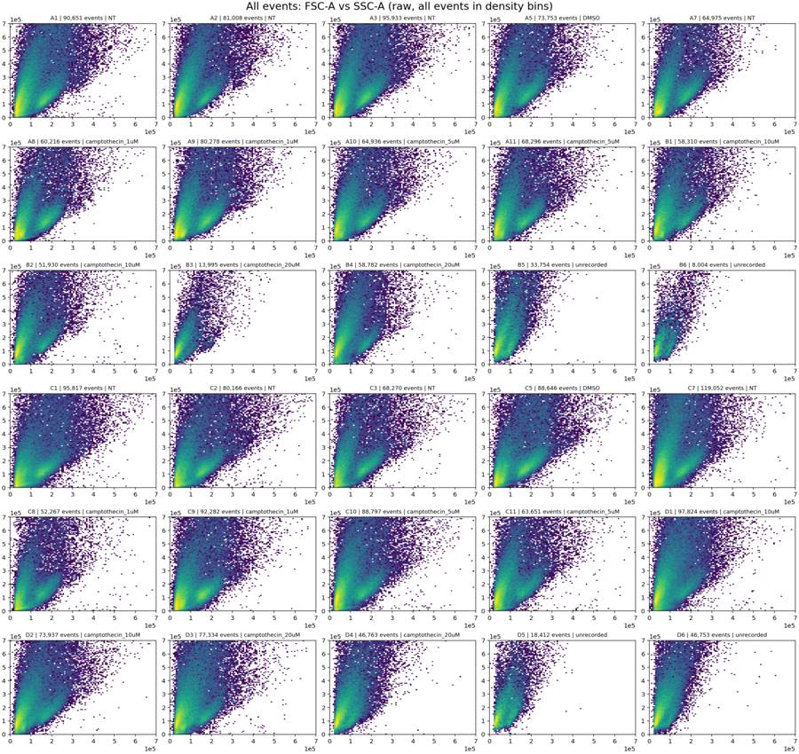
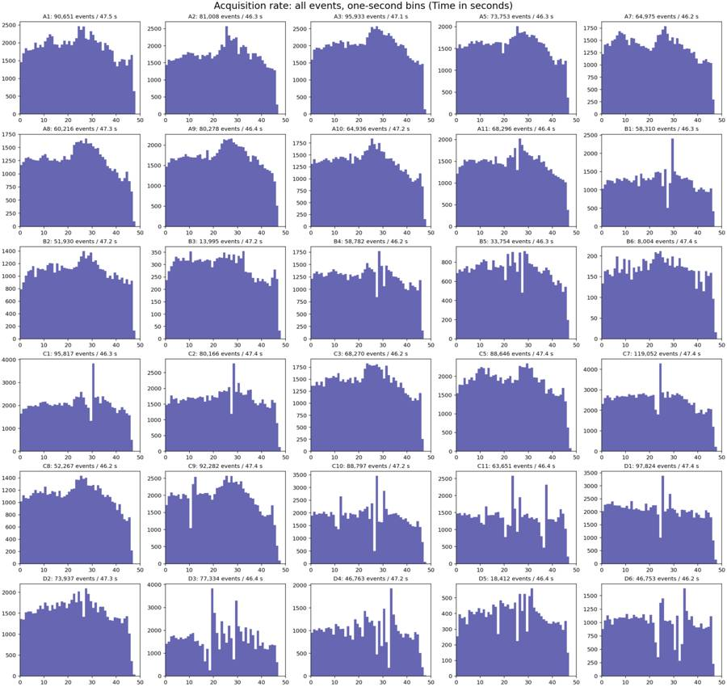
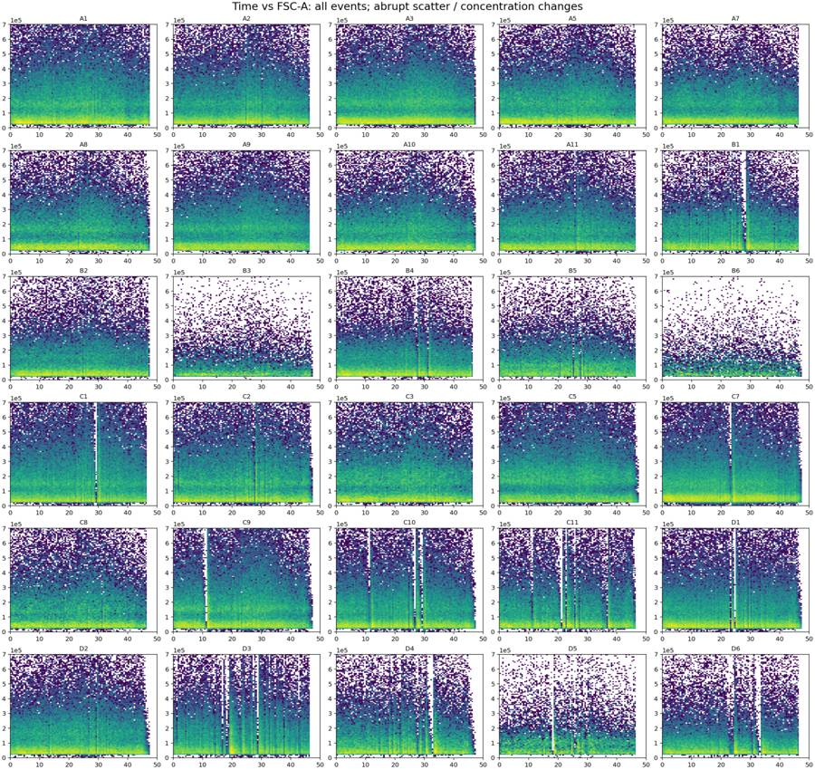
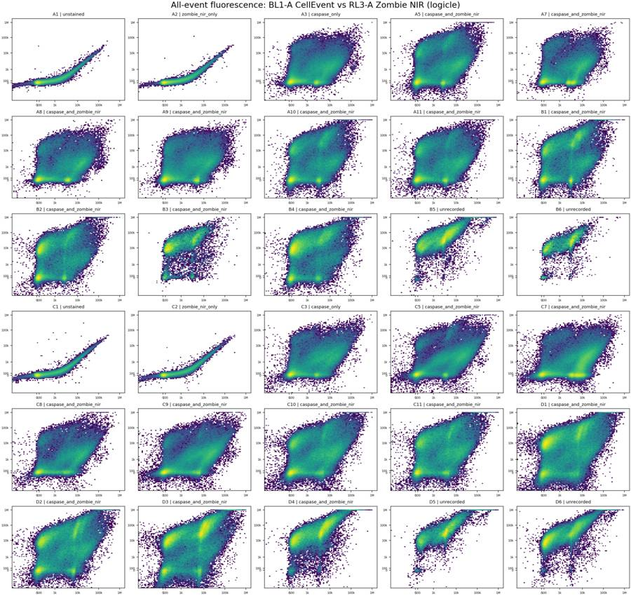
tool call · exec
text(await tools.exec_command({cmd:"python - <<'PY'\nimport sys\nsys.path.insert(0,'/task/outputs')\nfrom explore import *\nfig,axes=plt.subplots(2,3,figsize=(15,10),constrained_layout=True)\nfor ax,w in zip(axes.flat,['A1','A7','B1','C1','C7','D1']):\n e=EVENTS[w]\n ax.hist2d(e[:,IDX['FSC-A']],e[:,IDX['SSC-A']],bins=200,range=[[0,500000],[0,700000]],norm=LogNorm(),cmap='viridis')\n ax.set_title(w); ax.set_xlabel('FSC-A');ax.set_ylabel('SSC-A')\nsave(fig,'05_scatter_detail.png')\nfig,axes=plt.subplots(2,3,figsize=(15,10),constrained_layout=True)\nfor ax,w in zip(axes.flat,['A1','A7','B1','C1','C7','D1']):\n e=EVENTS[w]\n ax.hist2d(e[:,IDX['SSC-H']],e[:,IDX['SSC-A']],bins=200,range=[[0,500000],[0,700000]],norm=LogNorm(),cmap='viridis')\n ax.set_title(w); ax.set_xlabel('SSC-H');ax.set_ylabel('SSC-A')\nsave(fig,'06_singlet_detail.png')\nprint(pd.read_csv(OUT/'initial_qc.csv')[['well','FSC-H_p50','SSC-H_p50','SSC-H_saturated_pct','BL1-A_p50','BL1-A_p99','RL3-A_p50','RL3-A_p99']].to_string(index=False))\nPY","yield_time_ms":1000,"max_output_tokens":5000}));
tool output
Script completed
Wall time 1.2 seconds
Output:
{"chunk_id":"6feaa2","wall_time_seconds":1.000338908,"session_id":87427,"original_token_count":0,"output":""}11
agent
Several wells show brief interruptions in acquisition rate, and the lower-yield wells need a closer check after gating. The nominal caspase-only controls also have unexpected Zombie-channel fluorescence. I’m examining these signals within the cell and singlet gates to distinguish control problems from debris and aggregates.
tool call · exec
text(await tools.write_stdin({session_id:87427,chars:"","yield_time_ms":1000,"max_output_tokens":5500}));
for(const f of ["05_scatter_detail.png","06_singlet_detail.png"]){const r=await tools.view_image({path:"/task/outputs/plots/"+f});image(r.image_url);}
tool output
Script completed Wall time 0.0 seconds Output:
{"chunk_id":"666637","wall_time_seconds":0.00000367,"exit_code":0,"original_token_count":713,"output":"well FSC-H_p50 SSC-H_p50 SSC-H_saturated_pct BL1-A_p50 BL1-A_p99 RL3-A_p50 RL3-A_p99\n A1 107444.0 236447.0 13.508952 260.0 26159.50 51.0 3302.50\n A2 89066.0 211701.0 10.368112 274.0 24417.00 48.0 2997.00\n A3 94418.0 199436.0 8.490301 1487.0 61434.40 378.0 70556.48\n A5 88461.0 219665.0 10.030778 2033.0 61240.84 1083.0 218902.44\n A7 79788.0 197359.0 7.761447 2422.0 52286.12 413.0 100880.30\n A8 95585.5 209341.5 9.557261 2414.5 88420.90 561.0 106690.80\n A9 97709.0 182317.5 8.456862 1748.5 83584.68 559.0 118495.51\n A10 91075.0 198872.0 8.600776 1595.0 66267.65 1508.5 357955.60\n A11 90319.5 200501.5 9.682851 1628.0 81784.85 1097.0 211705.70\n B1 87515.5 223734.5 9.895387 2176.0 79884.24 3770.0 523023.70\n B2 77623.5 197872.0 9.884460 1001.0 72330.57 4369.0 298646.47\n B3 69409.0 164313.0 3.201143 1067.0 38706.94 14548.0 292261.24\n B4 71830.5 186143.0 8.019462 967.0 80332.48 8421.0 374579.13\n B5 84384.5 272017.5 8.277537 2381.5 64586.50 38241.5 927115.80\n B6 76816.5 193741.0 2.886057 1722.0 23997.62 18375.5 281854.91\n C1 119953.0 262182.0 19.199098 222.0 29128.72 51.0 4099.00\n C2 117926.0 251361.0 17.033406 197.0 28920.75 49.0 4127.70\n C3 118016.0 284480.0 17.701772 2020.5 99524.49 777.0 108542.41\n C5 129457.5 340337.5 17.205514 2869.0 126742.50 825.5 158616.30\n C7 80517.0 234144.5 12.125794 5127.0 100172.92 381.0 85920.76\n C8 100411.0 250204.0 16.685480 2359.0 97923.42 687.0 155457.80\n C9 111829.5 252957.5 17.306734 3093.0 142448.14 690.0 127346.06\n C10 93915.0 220725.0 14.764012 1742.0 130521.52 1729.0 285462.16\n C11 92231.0 218002.0 14.208732 2050.0 118610.50 3217.0 482241.00\n D1 79165.5 193336.5 12.047146 1474.0 152876.14 7207.0 514836.01\n D2 95004.0 210292.0 12.058915 2193.0 148620.44 5023.0 458378.92\n D3 89457.5 225728.0 12.588254 3685.0 169470.85 10697.0 621993.41\n D4 84539.0 227753.0 9.139704 2594.0 73595.24 26473.0 970955.14\n D5 89234.5 241053.0 9.966326 2808.5 114458.68 30954.0 1048575.00\n D6 67970.0 214341.0 8.641157 1162.0 77143.04 19859.0 814071.52\n"}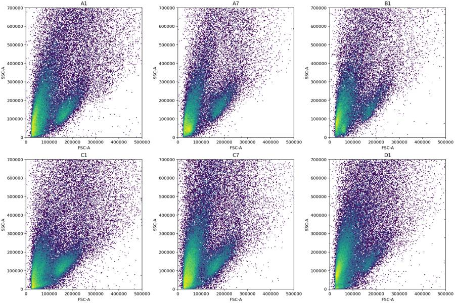
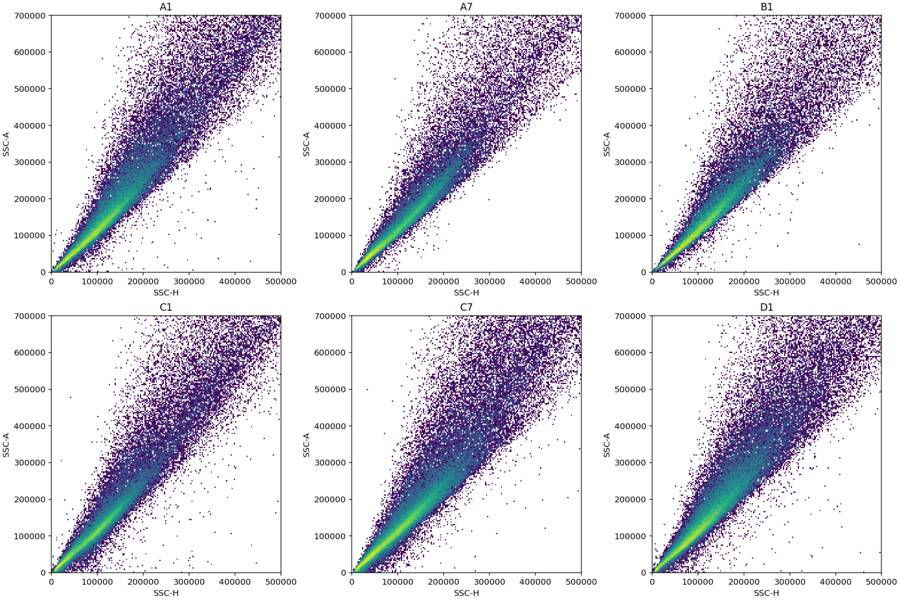
tool call · exec
text(await tools.apply_patch("*** Begin Patch\n*** Add File: /task/outputs/gate_plate.py\n+\"\"\"Reproduce shared gates and FlowKit counts using all raw events.\"\"\"\n+from pathlib import Path\n+import json\n+import numpy as np\n+import pandas as pd\n+import flowkit as fk\n+\n+ROOT = Path('/task')\n+OUT = ROOT/'outputs'\n+POPULATIONS = ['Cells', 'Single_Cells', 'Live', 'Caspase_pos']\n+PARENTS = ['all_events', 'Cells', 'Single_Cells', 'Live']\n+\n+# Units are native linear detector units. The plotted logicle fluorescence\n+# transform is only for visualization; the gates use the raw channels.\n+CELL_CENTER = [200000., 205000.]\n+CELL_COV = [[120000.**2, .70*120000.*165000.],\n+ [.70*120000.*165000., 165000.**2]]\n+SINGLET_VERTICES = [[20000., 18000.], [400000., 360000.],\n+ [400000., 560000.], [20000., 36000.]]\n+LIVE_MAX = 500.\n+CASPASE_MIN = 2000.\n+\n+def build_strategy():\n+ st = fk.GatingStrategy()\n+ def dim(ch, lo=None, hi=None):\n+ return fk.Dimension(ch, compensation_ref='uncompensated',\n+ range_min=lo, range_max=hi)\n+ st.add_gate(fk.gates.EllipsoidGate('Cells', [dim('FSC-A'), dim('SSC-A')],\n+ coordinates=CELL_CENTER, covariance_matrix=CELL_COV,\n+ distance_square=1.), ('root',))\n+ st.add_gate(fk.gates.PolygonGate('Single_Cells', [dim('SSC-H'), dim('SSC-A')],\n+ vertices=SINGLET_VERTICES), ('root','Cells'))\n+ st.add_gate(fk.gates.RectangleGate('Live', [dim('RL3-A',hi=LIVE_MAX)]),\n+ ('root','Cells','Single_Cells'))\n+ st.add_gate(fk.gates.RectangleGate('Caspase_pos', [dim('BL1-A',lo=CASPASE_MIN)]),\n+ ('root','Cells','Single_Cells','Live'))\n+ return st\n+\n+def main():\n+ layout = pd.read_csv(ROOT/'inputs/plate_layout.csv')\n+ strategy = build_strategy()\n+ with open(OUT/'gates.xml','wb') as handle:\n+ fk.export_gatingml(strategy, handle)\n+ saved = fk.parse_gating_xml(str(OUT/'gates.xml'))\n+ assert [n for n,_ in saved.get_gate_ids()] == POPULATIONS\n+ counts=[]; summaries=[]\n+ for row in layout.itertuples():\n+ sample=fk.Sample(str(ROOT/'inputs/raw'/row.file))\n+ result=saved.gate_sample(sample)\n+ original=strategy.gate_sample(sample)\n+ summary={'well':row.well,'all_events':sample.event_count}\n+ parent_n=sample.event_count\n+ for pop,parent in zip(POPULATIONS,PARENTS):\n+ n=int(result.get_gate_count(pop))\n+ assert n==original.get_gate_count(pop)\n+ assert np.array_equal(result.get_gate_membership(pop),original.get_gate_membership(pop))\n+ assert 0<=n<=parent_n\n+ counts.append(dict(file=row.file,well=row.well,population=pop,count=n,\n+ parent_population=parent,\n+ pct_of_parent=100.*n/parent_n if parent_n else 0.))\n+ summary[pop]=n\n+ summary[pop+'_pct_parent']=100.*n/parent_n if parent_n else 0.\n+ parent_n=n\n+ summaries.append(summary)\n+ df=pd.DataFrame(counts)\n+ assert len(df)==120 and not df.duplicated(['file','population']).any()\n+ df.to_csv(OUT/'counts.csv',index=False,float_format='%.8f')\n+ pd.DataFrame(summaries).to_csv(OUT/'gating_summary.csv',index=False)\n+ print(pd.DataFrame(summaries).to_string(index=False))\n+\n+if __name__=='__main__':\n+ main()\n*** End Patch"));
text(await tools.exec_command({cmd:"python /task/outputs/gate_plate.py","yield_time_ms":1000,"max_output_tokens":7000}));
tool output
Script completed
Wall time 1.2 seconds
Output:
{}
{"chunk_id":"29479e","wall_time_seconds":1.000775449,"session_id":5411,"original_token_count":1093,"output":"well all_events Cells Cells_pct_parent Single_Cells Single_Cells_pct_parent Live Live_pct_parent Caspase_pos Caspase_pos_pct_parent\n A1 90651 12838 14.162006 11100 86.462066 11095 99.954955 42 0.378549\n A2 81008 9733 12.014863 8381 86.109113 8373 99.904546 26 0.310522\n A3 95933 15228 15.873578 13566 89.085894 11997 88.434321 1460 12.169709\n A5 73753 10162 13.778423 9051 89.067113 7259 80.201083 802 11.048354\n A7 64975 9168 14.110042 8200 89.441536 7232 88.195122 1166 16.122788\n A8 60216 9514 15.799787 8806 92.558335 7668 87.076993 1358 17.709963\n A9 80278 14374 17.905279 13153 91.505496 11029 83.851593 2227 20.192221\n A10 64936 10132 15.603055 9064 89.459139 6963 76.820388 841 12.078127\n A11 68296 10197 14.930596 9207 90.291262 7630 82.871728 1006 13.184797\n B1 58310 7506 12.872578 6608 88.036238 4598 69.582324 606 13.179643\n B2 51930 6020 11.592528 5318 88.338870 4024 75.667544 342 8.499006\n B3 13995 1457 10.410861 1225 84.076870 444 36.244898 93 20.945946\n B4 58782 6019 10.239529 5383 89.433461 3918 72.784693 417 10.643185\n B5 33754 2768 8.200510 2112 76.300578 52 2.462121 35 67.307692\n B6 8004 830 10.369815 693 83.493976 62 8.946609 34 54.838710\n C1 95817 15581 16.261206 13216 84.821257 13215 99.992433 2 0.015134\n C2 80166 12925 16.122795 11206 86.700193 11205 99.991076 3 0.026774\n C3 68270 9844 14.419218 8814 89.536774 7687 87.213524 768 9.990894\n C5 88646 14787 16.680956 13167 89.044431 12386 94.068505 1447 11.682545\n C7 119052 13473 11.316904 11586 85.994211 10591 91.412049 2018 19.053914\n C8 52267 7488 14.326439 6750 90.144231 6043 89.525926 1300 21.512494\n C9 92282 14654 15.879586 12892 87.975979 11935 92.576792 2450 20.527859\n C10 88797 11312 12.739169 9815 86.766266 8097 82.496179 1062 13.115969\n C11 63651 8384 13.171828 7300 87.070611 5003 68.534247 927 18.528883\n D1 97824 10398 10.629293 8611 82.814003 5830 67.704099 774 13.276158\n D2 73937 10064 13.611588 8842 87.857711 5620 63.560280 750 13.345196\n D3 77334 9446 12.214550 7899 83.622697 4938 62.514242 662 13.406237\n D4 46763 4511 9.646515 3516 77.942806 501 14.249147 102 20.359281\n D5 18412 1975 10.726700 1581 80.050633 11 0.695762 7 63.636364\n D6 46753 2395 5.122666 1984 82.839248 161 8.114919 124 77.018634\n"}tool call · exec
text(await tools.clock__curr_time({}));
text(await tools.exec_command({cmd:"python - <<'PY'\nimport sys\nsys.path.insert(0,'/task/outputs')\nfrom explore import *\nfrom gate_plate import *\ns=build_strategy()\nfig,axes=plt.subplots(2,3,figsize=(15,10),constrained_layout=True)\nvals,vecs=np.linalg.eigh(np.array(CELL_COV)); th=np.linspace(0,2*np.pi,400)\nellipse=np.array(CELL_CENTER)[:,None]+vecs@np.diag(np.sqrt(vals))@np.array([np.cos(th),np.sin(th)])\nfor ax,w in zip(axes.flat,['A1','A7','B1','C1','C7','D1']):\n e=EVENTS[w]\n ax.hist2d(e[:,IDX['FSC-A']],e[:,IDX['SSC-A']],bins=150,range=[[0,500000],[0,650000]],norm=LogNorm(),cmap='viridis')\n ax.plot(*ellipse,color='red',lw=1.4);ax.set_title(w);ax.set_xlabel('FSC-A');ax.set_ylabel('SSC-A')\nsave(fig,'07_cells_gate.png')\nfig,axes=plt.subplots(2,3,figsize=(15,10),constrained_layout=True)\nrows=[]\nfor ax,w in zip(axes.flat,['A1','A7','B1','C1','C7','D1']):\n e=EVENTS[w]; r=s.gate_sample(SAMPLES[w]); e=e[r.get_gate_membership('Cells')]\n ax.hist2d(e[:,IDX['SSC-H']],e[:,IDX['SSC-A']],bins=150,range=[[0,350000],[0,400000]],norm=LogNorm(),cmap='viridis')\n v=np.array(SINGLET_VERTICES+[SINGLET_VERTICES[0]])\n ax.plot(v[:,0],v[:,1],color='red',lw=1.4);ax.set_title(w);ax.set_xlabel('SSC-H');ax.set_ylabel('SSC-A')\n rows.append(dict(well=w,**{f'ratio_p{q}':v for q,v in zip([1,5,25,50,75,95,99],np.percentile(e[:,IDX['SSC-A']]/np.maximum(e[:,IDX['SSC-H']],1),[1,5,25,50,75,95,99]))}))\nsave(fig,'08_singlets_gate.png')\nprint(pd.DataFrame(rows).to_string(index=False))\nrows=[]\nfor w in ['A1','A2','A3','C1','C2','C3']:\n e=EVENTS[w];r=s.gate_sample(SAMPLES[w]); m=r.get_gate_membership('Single_Cells');l=r.get_gate_membership('Live')\n for c,mask in [('BL1-A',l),('RL3-A',m)]:\n v=e[mask,IDX[c]]\n rows.append(dict(well=w,ch=c,n=len(v),**{f'p{q}':v for q,v in zip([50,95,99,99.5,99.9],np.percentile(v,[50,95,99,99.5,99.9]))}))\nprint(pd.DataFrame(rows).to_string(index=False))\npd.DataFrame(rows).to_csv(OUT/'control_quantiles.csv',index=False)\nPY","yield_time_ms":1000,"max_output_tokens":5000}));
tool output
Script completed
Wall time 1.2 seconds
Output:
{"current_time":"2026-11-10 17:11:36 UTC"}
{"chunk_id":"4756ed","wall_time_seconds":1.00123893,"session_id":29283,"original_token_count":0,"output":""}tool call · exec
text(await tools.write_stdin({session_id:29283,chars:"","yield_time_ms":1000,"max_output_tokens":5000}));
for(const f of ["07_cells_gate.png","08_singlets_gate.png"]){const r=await tools.view_image({path:"/task/outputs/plots/"+f});image(r.image_url);}
tool output
Script completed Wall time 0.0 seconds Output:
{"chunk_id":"cacf4a","wall_time_seconds":0.00001665,"exit_code":0,"original_token_count":329,"output":"well ratio_p1 ratio_p5 ratio_p25 ratio_p50 ratio_p75 ratio_p95 ratio_p99\n A1 0.757535 0.975843 1.114122 1.185548 1.290306 1.633366 2.027569\n A7 0.914272 1.055434 1.143170 1.208210 1.300469 1.564001 1.996622\n B1 0.841206 1.023622 1.121727 1.191418 1.284120 1.623579 2.112961\n C1 0.701426 0.922415 1.099588 1.175768 1.287759 1.652534 2.076875\n C7 0.696418 0.912405 1.095315 1.175333 1.280479 1.609460 2.102840\n D1 0.728509 0.977715 1.117161 1.199532 1.326506 1.763659 2.318269\nwell ch n p50 p95 p99 p99.5 p99.9\n A1 BL1-A 11095 54.0 278.0 1163.18 1711.120 3011.718\n A1 RL3-A 11100 7.0 99.0 169.01 234.000 418.802\n A2 BL1-A 8373 62.0 318.0 1082.28 1659.140 2512.936\n A2 RL3-A 8381 8.0 100.0 158.40 230.500 461.940\n A3 BL1-A 11997 109.0 4327.0 7249.40 8901.620 13647.048\n A3 RL3-A 13566 66.0 1099.0 3642.70 5489.525 14978.745\n C1 BL1-A 13215 36.0 178.3 462.86 602.790 1110.292\n C1 RL3-A 13216 4.0 91.0 131.00 151.925 190.785\n C2 BL1-A 11205 40.0 170.0 393.84 535.960 1128.472\n C2 RL3-A 11206 3.0 92.0 133.00 148.975 223.180\n C3 BL1-A 7687 112.0 4260.3 8414.52 10044.090 14741.994\n C3 RL3-A 8814 90.0 1220.7 3693.74 6459.775 33437.250\n"}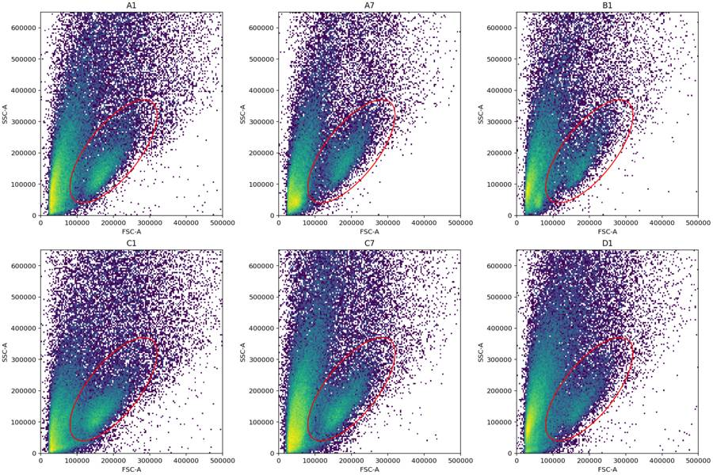
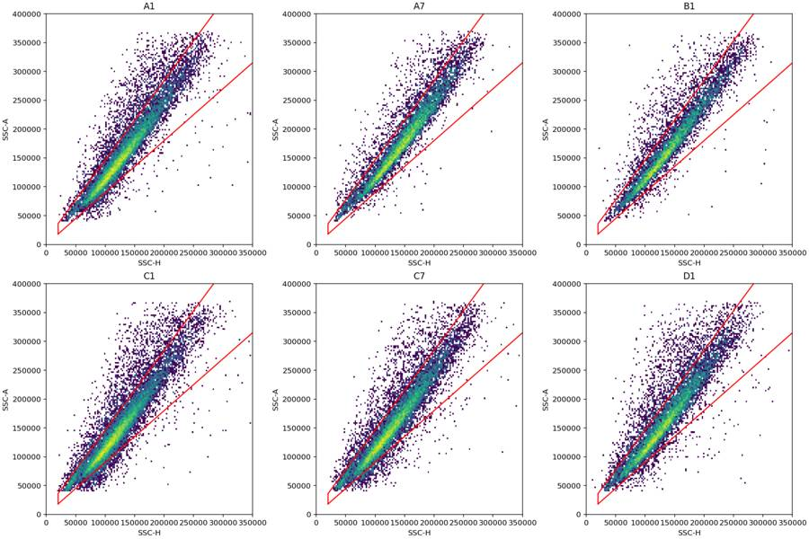
tool call · exec
text(await tools.apply_patch("*** Begin Patch\n*** Add File: /task/outputs/review_qc.py\n+\"\"\"Full-event gate review, control distributions, and time-resolved QC.\"\"\"\n+from explore import *\n+from gate_plate import *\n+from scipy.ndimage import median_filter\n+\n+STRATEGY = fk.parse_gating_xml(str(OUT/'gates.xml'))\n+RESULTS = {w:STRATEGY.gate_sample(s) for w,s in SAMPLES.items()}\n+MASKS = {w:{p:r.get_gate_membership(p) for p in POPULATIONS} for w,r in RESULTS.items()}\n+\n+def intervals(mask, edges):\n+ padded=np.r_[False,mask,False]\n+ starts=np.flatnonzero(np.diff(padded.astype(int))==1)\n+ stops=np.flatnonzero(np.diff(padded.astype(int))==-1)\n+ return [(float(edges[a]),float(edges[b])) for a,b in zip(starts,stops)]\n+\n+def fluorescence_ticks(ax, axis='x'):\n+ v=np.array([-100.,0.,100.,1000.,10000.,100000.,1000000.])\n+ if axis=='x':ax.set_xticks(FLUOR.apply(v),['-100','0','100','1k','10k','100k','1M'])\n+ else:ax.set_yticks(FLUOR.apply(v),['-100','0','100','1k','10k','100k','1M'])\n+\n+def collect_qc():\n+ rows=[]; binrows=[]\n+ for record in LAYOUT.itertuples():\n+ w=record.well; e=EVENTS[w];t=e[:,IDX['Time']]; s=SAMPLES[w];m=MASKS[w]\n+ edges=np.arange(0,np.ceil(t.max()/.25)*.25+.001,.25)\n+ h,_=np.histogram(t,edges)\n+ mids=(edges[:-1]+edges[1:])/2\n+ local=median_filter(h.astype(float),size=21,mode='nearest')\n+ valid=(mids>=1)&(mids<=t.max()-1)\n+ relative=h/np.maximum(local,1)\n+ low=(relative<.25)&valid; high=(relative>2.)&valid\n+ gaps=np.diff(t)\n+ gidx=np.argsort(gaps)[-5:][::-1]\n+ row=dict(well=w,all_events=len(e),time_start=t.min(),time_end=t.max(),\n+ max_event_gap_s=gaps.max(),max_gap_start_s=t[gidx[0]],\n+ low_rate_seconds=low.sum()*.25,low_rate_runs=len(intervals(low,edges)),\n+ low_rate_intervals=json.dumps(intervals(low,edges)),\n+ high_rate_seconds=high.sum()*.25,high_rate_intervals=json.dumps(intervals(high,edges)),\n+ min_local_rate_ratio=relative[valid].min(),\n+ max_local_rate_ratio=relative[valid].max(),\n+ mean_rate_5_15_s=((t>=5)&(t<15)).sum()/10,\n+ mean_rate_35_45_s=((t>=35)&(t<45)).sum()/10,\n+ nonfinite_values=int((~np.isfinite(e)).sum()),\n+ backward_time_steps=int((gaps<0).sum()))\n+ for p in POPULATIONS:row[p]=int(m[p].sum())\n+ for ch in ['FSC-A','SSC-A','FSC-H','SSC-H','BL1-A','RL3-A']:\n+ vmax=float(s.channels.set_index('pnn').loc[ch,'pnr'])-1\n+ atmax=e[:,IDX[ch]]>=vmax\n+ for p,mask in [('all',np.ones(len(e),dtype=bool)),('Cells',m['Cells']),('Single_Cells',m['Single_Cells']),('Live',m['Live'])]:\n+ row[f'{ch}_sat_pct_{p}']=100*atmax[mask].mean() if mask.any() else np.nan\n+ for window,a,b in [('early',5,15),('late',35,45)]:\n+ time_mask=(t>=a)&(t<b); parent=time_mask\n+ for p in POPULATIONS:\n+ row[f'{p}_pct_{window}']=100*(m[p]&time_mask).sum()/parent.sum() if parent.sum() else np.nan\n+ parent=m[p]&time_mask\n+ for ch in ['FSC-A','SSC-A','BL1-A','RL3-A']:\n+ row[f'{ch}_median_singlets_{window}']=np.median(e[time_mask&m['Single_Cells'],IDX[ch]])\n+ rows.append(row)\n+ for i,(a,b) in enumerate(zip(edges[:-1],edges[1:])):\n+ mask=(t>=a)&(t<b)\n+ br=dict(well=w,start_s=a,end_s=b,events=int(h[i]),\n+ rate_per_s=int(h[i])*4,local_median_rate_per_s=local[i]*4,\n+ relative_rate=relative[i],severe_low=bool(low[i]),burst=bool(high[i]))\n+ br.update({p:int((m[p]&mask).sum()) for p in POPULATIONS})\n+ binrows.append(br)\n+ pd.DataFrame(rows).to_csv(OUT/'qc_metrics.csv',index=False)\n+ pd.DataFrame(binrows).to_csv(OUT/'time_bins.csv',index=False)\n+ print(pd.DataFrame(rows)[['well','all_events','Live','max_event_gap_s','max_gap_start_s','low_rate_seconds','low_rate_runs','low_rate_intervals','max_local_rate_ratio','Cells_pct_early','Cells_pct_late','Live_pct_early','Live_pct_late','Caspase_pos_pct_early','Caspase_pos_pct_late']].to_string(index=False))\n+\n+def plot_controls():\n+ fig,axes=plt.subplots(2,2,figsize=(14,10))\n+ for ax,gen,wells in zip(axes[0],['WT','PGRN-KO'],[['A1','A2','A3','A5','A7','B1','B3'],['C1','C2','C3','C5','C7','D1','D3']]):\n+ for w in wells:\n+ v=EVENTS[w][MASKS[w]['Single_Cells'],IDX['RL3-A']]\n+ ax.hist(FLUOR.apply(v),bins=np.linspace(-.1,1.05,160),histtype='step',density=True,label=w,lw=1.3)\n+ ax.axvline(FLUOR.apply(np.array([LIVE_MAX]))[0],ls='--',color='black',label=f'Live < {LIVE_MAX:g}')\n+ fluorescence_ticks(ax);ax.set_title(f'{gen}: RL3-A in Single_Cells');ax.set_ylabel('Density');ax.legend(fontsize=9)\n+ for ax,gen,wells in zip(axes[1],['WT','PGRN-KO'],[['A1','A2','A3','A5','A7'],['C1','C2','C3','C5','C7']]):\n+ for w in wells:\n+ v=EVENTS[w][MASKS[w]['Live'],IDX['BL1-A']]\n+ ax.hist(FLUOR.apply(v),bins=np.linspace(-.1,1.05,160),histtype='step',density=True,label=w,lw=1.3)\n+ ax.axvline(FLUOR.apply(np.array([CASPASE_MIN]))[0],ls='--',color='black',label=f'Caspase >= {CASPASE_MIN:g}')\n+ fluorescence_ticks(ax);ax.set_title(f'{gen}: BL1-A in Live');ax.set_ylabel('Density');ax.legend(fontsize=9)\n+ fig.tight_layout()\n+ save(fig,'09_control_boundaries.png')\n+\n+def plot_all_gates():\n+ vals,vecs=np.linalg.eigh(np.array(CELL_COV));th=np.linspace(0,2*np.pi,400)\n+ ellipse=np.array(CELL_CENTER)[:,None]+vecs@np.diag(np.sqrt(vals))@np.array([np.cos(th),np.sin(th)])\n+ vertices=np.array(SINGLET_VERTICES+[SINGLET_VERTICES[0]])\n+ for row in LAYOUT.itertuples():\n+ w=row.well;e=EVENTS[w];m=MASKS[w]\n+ fig,axes=plt.subplots(1,4,figsize=(18,4.8))\n+ fig.suptitle(f'{w} | {row.genotype
… [3,328 more characters not shown]tool output
Script completed
Wall time 1.2 seconds
Output:
{}
{"chunk_id":"0d65a9","wall_time_seconds":1.000979699,"session_id":87446,"original_token_count":0,"output":""}tool call · exec
text(await tools.exec_command({cmd:"python - <<'PY'\nimport sys\nsys.path.insert(0,'/task/outputs')\nfrom explore import *\nfrom gate_plate import *\nst=build_strategy(); rows=[]\nfor w in ['A1','A2','A3','A5','A7','C1','C2','C3','C5','C7']:\n e=EVENTS[w];res=st.gate_sample(SAMPLES[w]);m=res.get_gate_membership('Single_Cells');e=e[m];g=e[:,IDX['BL1-A']];r=e[:,IDX['RL3-A']]\n rows.append(dict(well=w,n=len(e),NIR_500=int((r>=500).sum()),NIR_2000=int((r>=2000).sum()),NIR_2000_green_500=int(((r>=2000)&(g<500)).sum()),NIR_greater_green_500=int(((r>=500)&(r>g)).sum()),NIR_500_green_2000=int(((r>=500)&(g<2000)).sum()),green_2000=int((g>=2000).sum())))\nprint(pd.DataFrame(rows).to_string(index=False))\nPY","yield_time_ms":1000,"max_output_tokens":5000}));
text(await tools.write_stdin({session_id:87446,chars:"","yield_time_ms":1000,"max_output_tokens":8000}));
tool output
Script completed
Wall time 1.2 seconds
Output:
{"chunk_id":"a0213a","wall_time_seconds":1.00112936,"session_id":21313,"original_token_count":289,"output":"well n NIR_500 NIR_2000 NIR_2000_green_500 NIR_greater_green_500 NIR_500_green_2000 green_2000\n A1 11100 5 1 1 1 1 46\n A2 8381 8 0 0 0 0 34\n A3 13566 1569 338 217 1402 1425 1604\n A5 9051 1792 989 140 1626 954 1640\n A7 8200 968 205 116 814 834 1300\n C1 13216 1 0 0 0 0 3\n C2 11206 1 0 0 0 0 4\n C3 8814 1127 229 150 1023 1040 855\n C5 13167 781 365 69 655 444 1784\n C7 11586 995 232 126 815 852 2161\n"}
{"chunk_id":"2faa43","wall_time_seconds":0.00000349,"exit_code":0,"original_token_count":2767,"output":"well all_events Live max_event_gap_s max_gap_start_s low_rate_seconds low_rate_runs low_rate_intervals max_local_rate_ratio Cells_pct_early Cells_pct_late Live_pct_early Live_pct_late Caspase_pos_pct_early Caspase_pos_pct_late\n A1 90651 11095 0.088 29.579 0.00 0 [] 1.584559 14.248021 14.228543 99.959694 100.000000 0.282258 0.347567\n A2 81008 8373 0.081 15.382 0.25 1 [[30.0, 30.25]] 1.511797 12.542195 12.457589 100.000000 99.824150 0.217746 0.352319\n A3 95933 11997 0.023 44.922 0.00 0 [] 1.254274 16.119272 16.447296 88.941655 89.048338 12.623951 12.383376\n A5 73753 7259 0.073 26.996 0.00 0 [] 1.533835 14.123357 14.638292 80.197531 80.512249 10.899015 10.580913\n A7 64975 7232 0.016 13.365 0.00 0 [] 1.208219 14.138553 15.382629 88.492872 87.918216 15.592635 16.208598\n A8 60216 7668 0.031 36.945 0.00 0 [] 1.330846 15.980141 16.124090 87.513007 87.058081 18.311534 18.056563\n A9 80278 11029 0.045 16.950 0.00 0 [] 1.344418 18.556342 18.948888 83.942603 84.730539 18.559219 21.245583\n A10 64936 6963 0.108 23.682 0.00 0 [] 1.588068 15.354857 17.192825 76.102564 75.864055 10.781671 12.680334\n A11 68296 7630 0.182 25.961 0.50 1 [[25.75, 26.25]] 1.736961 15.543564 16.072980 82.234689 84.561213 13.757817 11.979500\n B1 58310 4598 0.485 28.314 1.50 3 [[15.75, 16.0], [27.0, 27.25], [27.75, 28.75]] 3.121813 13.253200 13.683241 68.324251 70.053071 13.559322 13.311688\n B2 51930 4024 0.128 22.482 0.00 0 [] 1.659341 11.960488 11.443948 74.406780 77.185930 7.630979 6.770833\n B3 13995 444 0.072 19.537 0.00 0 [] 1.537037 9.568189 10.4
… [6,529 more characters not shown]17
agent
The first gate set is saved, and reloading `gates.xml` reproduces every count exactly. B5, B6, D5 and D6 have only 11–161 Live events, while C11 and D3 show repeated interruptions in flow. I’m reviewing the smaller interruptions and control discrepancies before finalizing the exclusions.
tool call · exec
for(const f of ["09_control_boundaries.png","time_B1.png","time_C10.png","time_D3.png"]){const r=await tools.view_image({path:"/task/outputs/plots/"+f});image(r.image_url);}
tool output
Script completed Wall time 0.1 seconds Output:
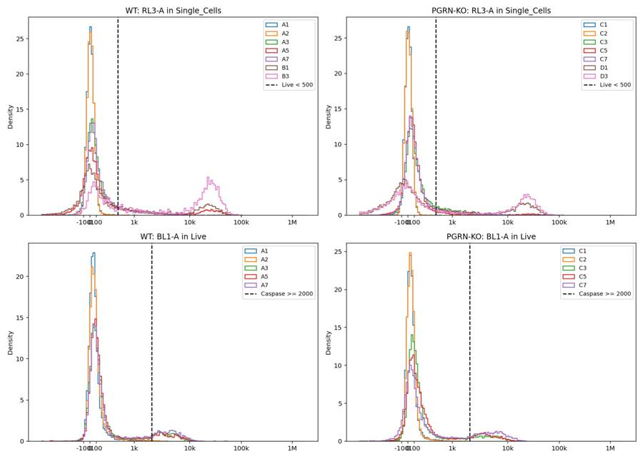
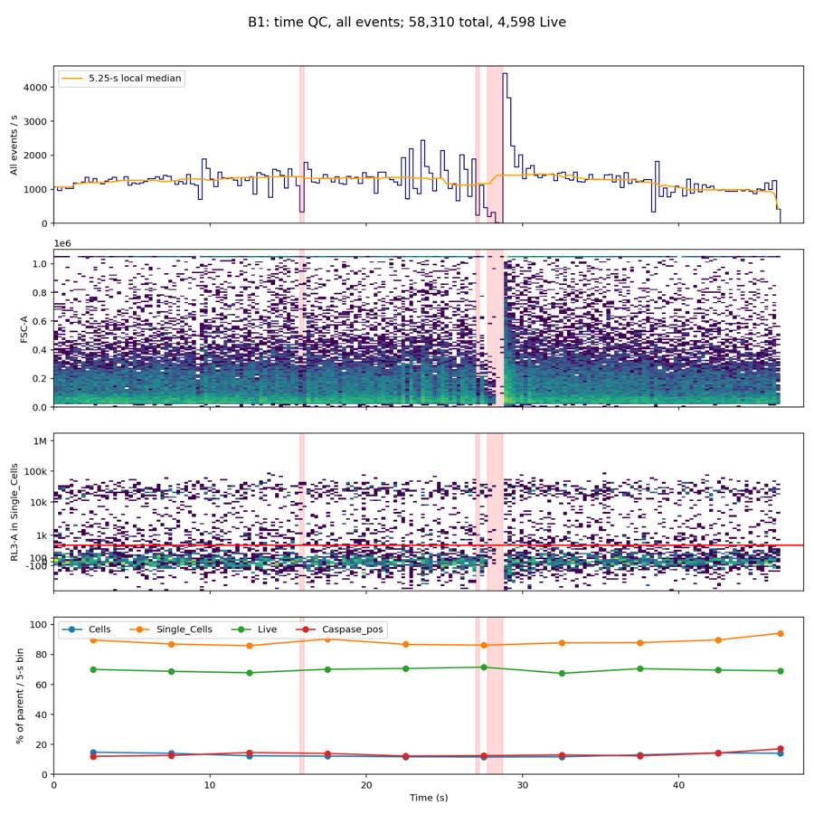
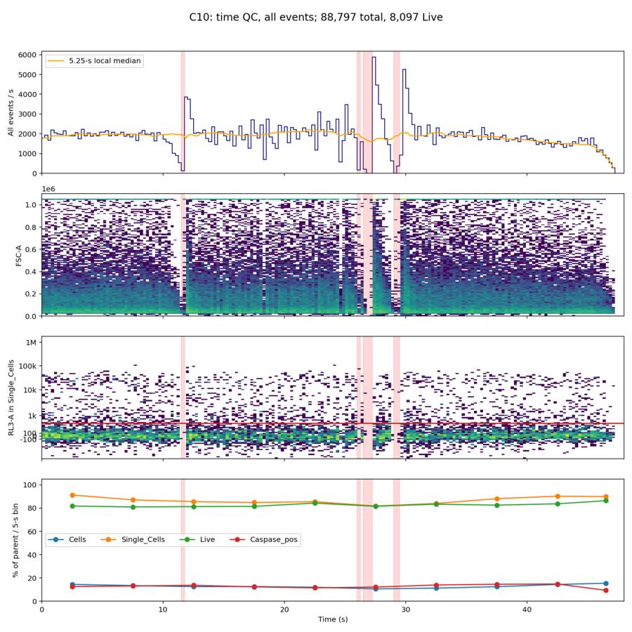
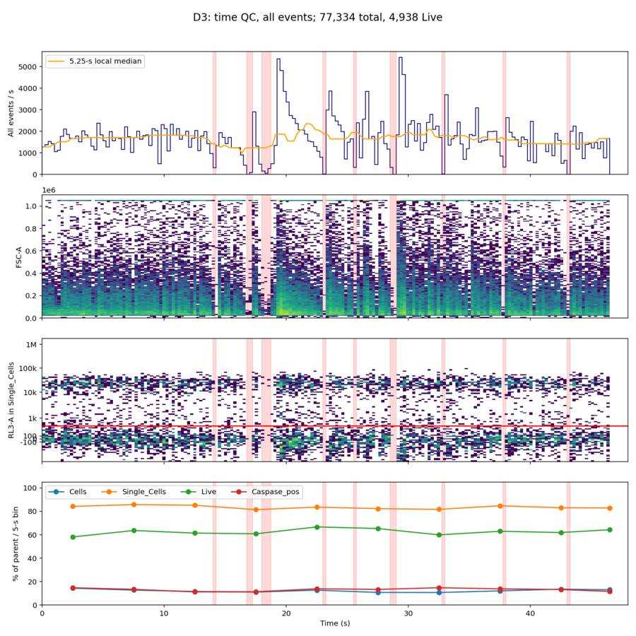
tool call · exec
text(await tools.exec_command({cmd:"python - <<'PY'\nimport sys\nsys.path.insert(0,'/task/outputs')\nfrom explore import *\nfrom gate_plate import *\nst=build_strategy(); rows=[]\nfor w in SAMPLES:\n e=EVENTS[w];r=st.gate_sample(SAMPLES[w]);m=r.get_gate_membership('Single_Cells');d={'well':w,'singlets':int(m.sum())}\n for thresh in [500,1000,2000,4000,5000,6000,7000,10000]:\n live=m&(e[:,IDX['RL3-A']]<thresh)\n d[f'live_{thresh}']=int(live.sum())\n d[f'casp_pct_{thresh}']=round(100*(live&(e[:,IDX['BL1-A']]>=2000)).sum()/max(live.sum(),1),2)\n rows.append(d)\ndf=pd.DataFrame(rows);df.to_csv(OUT/'fluorescence_sensitivity.csv',index=False)\nprint(df.to_string(index=False))\nfig,axes=plt.subplots(1,2,figsize=(14,5))\nfor ax,wells in zip(axes,[['A1','A2','A3','A5','A7','B1','B3','B5'],['C1','C2','C3','C5','C7','D1','D3','D5']]):\n for w in wells:\n r=st.gate_sample(SAMPLES[w]);m=r.get_gate_membership('Single_Cells');v=EVENTS[w][m,IDX['RL3-A']]\n n,ed=np.histogram(v,bins=np.logspace(2,5,75));ax.stairs(n/len(v)*100,ed,label=w)\n ax.set_xscale('log');ax.set_yscale('log');ax.set_ylim(.003,10);ax.axvline(7000,color='black',ls='--')\n ax.legend();ax.set_xlabel('RL3-A, raw');ax.set_ylabel('% Single_Cells / log bin')\nfig.tight_layout();save(fig,'10_zombie_boundary_detail.png')\nPY","yield_time_ms":1000,"max_output_tokens":7000}));
tool output
Script completed
Wall time 1.2 seconds
Output:
{"chunk_id":"7f6a1b","wall_time_seconds":1.001363011,"session_id":78811,"original_token_count":0,"output":""}tool call · exec
text(await tools.write_stdin({session_id:78811,chars:"","yield_time_ms":1000,"max_output_tokens":7500}));
const r=await tools.view_image({path:"/task/outputs/plots/10_zombie_boundary_detail.png"});image(r.image_url);
text(await tools.clock__curr_time({}));
tool output
Script completed Wall time 0.0 seconds Output:
{"chunk_id":"a604a8","wall_time_seconds":0.00000363,"exit_code":0,"original_token_count":1729,"output":"well singlets live_500 casp_pct_500 live_1000 casp_pct_1000 live_2000 casp_pct_2000 live_4000 casp_pct_4000 live_5000 casp_pct_5000 live_6000 casp_pct_6000 live_7000 casp_pct_7000 live_10000 casp_pct_10000\n A1 11100 11095 0.38 11099 0.41 11099 0.41 11099 0.41 11099 0.41 11099 0.41 11099 0.41 11099 0.41\n A2 8381 8373 0.31 8380 0.39 8381 0.41 8381 0.41 8381 0.41 8381 0.41 8381 0.41 8381 0.41\n A3 13566 11997 12.17 12800 11.80 13228 11.69 13454 11.71 13488 11.72 13505 11.72 13515 11.74 13536 11.75\n A5 9051 7259 11.05 7749 10.98 8062 11.04 8208 11.29 8243 11.46 8264 11.56 8285 11.68 8329 12.05\n A7 8200 7232 16.12 7744 15.64 7995 15.52 8115 15.53 8134 15.60 8151 15.64 8162 15.66 8173 15.69\n A8 8806 7668 17.71 8184 17.28 8476 17.02 8615 16.99 8652 17.08 8662 17.11 8674 17.13 8698 17.21\n A9 13153 11029 20.19 11939 19.66 12526 19.33 12825 19.22 12890 19.27 12931 19.29 12953 19.33 12992 19.41\n A10 9064 6963 12.08 7547 11.75 7881 11.72 8113 11.89 8160 12.02 8200 12.15 8220 12.24 8293 12.75\n A11 9207 7630 13.18 8175 12.97 8509 12.97 8660 13.19 8703 13.37 8731 13.50 8746 13.58 8794 13.85\n B1 6608 4598 13.18 5006 12.72 5293 12.60 5456 13.03 5512 13.35 5541 13.57 5561 13.79 5617 14.47\n B2 5318 4024 8.50 4324 8.60 4513 8.62 4635 9.00 4669 9.25 4697 9.50 4717 9.71 4771 10.48\n B3 1225 444 20.95 519 20.42 570 19.82 604 21.03 614 21.66 623 22.31 626 22.68 652 25.61\n B4 5383 3918 10.64 4226 10.67 4461 10.83 4587 11.21 4612 11.49 4627 11.50 4643 11.57 4690 12.22\n B5 2112 52 67.31 57 64.91 67 70.15 89 77.53 104 80.77 119 82.35 135 84.44 193 86.53\n B6 693 62 54.84 69 56.52 81 61.73 101 69.31 105 70.48 121 74.38 126 75.40 164 79.88\n C1 13216 13215 0.02 13216 0.02 13216 0.02 13216 0.02 13216 0.02 13216 0.02 13216 0.02 13216 0.02\n C2 11206 11205 0.03 11206 0.04 11206 0.04 11206 0.04 11206 0.04 11206 0.04 11206 0.04 11206 0.04\n C3 8814 7687 9.99 8254 9.55 8585 9.50 8732 9.55 8755 9.57 8767 9.59 8775 9.60 8789 9.64\n C5 13167 12386 11.68 12678 11.76 12802 11.82 12861 11.91 12879 11.96 12893 12.02 12898 12.04 12918 12.13\n C7 11586 10591 19.05 11093 18.74 11354 18.57 11477 18.53 11497 18.54 11517 18.55 11528 18.55 11543 18.60\n C8 6750 6043 21.51 6348 20.98 6488 20.90 6574 20.90 6589 20.90 6595 20.94 6598 20.96 6615 21.06\n C9 12892 11935 20.53 12314 20.51 12526 20.49 12617 20.58 12636 20.61 12656 20.69 12668 20.74 12697 20.84\n C10 9815 8097 13.12 8616 13.01 8925 13.10 9093 13.42 9146 13.62 9187 13.81 9216 14.00 9274 14.32\n C11 7300 5003 18.53 5613 17.85 6047 17.40 6337 17.53 6391 17.74 6436 17.87 6475 18.01 6551 18.49\n D1 8611 5830 13.28 6306 13.23 6625 13.46 6831 14.00 6882 14.24 6920 14.54 6965 14.87 7105 16.05\n D2 8842 5620 13.35 6248 13.16 6
… [1,050 more characters not shown]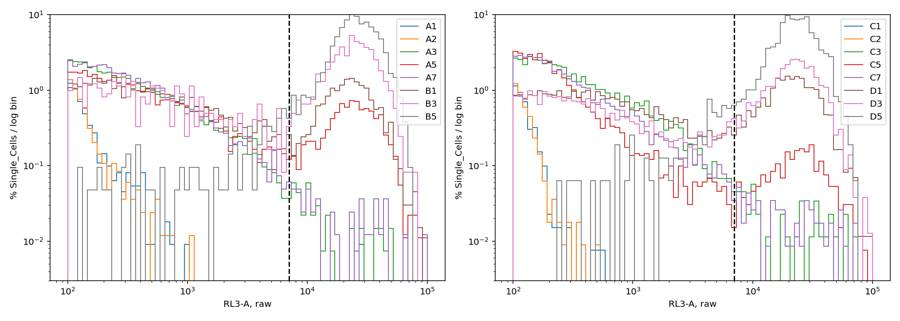
{"current_time":"2026-11-10 17:14:59 UTC"}20
agent
The control review supports a higher Live boundary: the caspase-only wells have a broad NIR background tail, with 99.5th percentiles near 5,490 and 6,460. I’m setting the shared cutoff at 7,000, below the separate Zombie-bright population in treated wells. This follows the supplied controls; the tail alone does not establish a labeling error.
tool call · exec
text(await tools.apply_patch("*** Begin Patch\n*** Update File: /task/outputs/gate_plate.py\n@@\n-LIVE_MAX = 500.\n+# Above the larger of the 99.5th percentiles of the Zombie-negative controls\n+# (C3: 6459.8; A3: 5489.5), below the distinct treated Zombie-bright mode.\n+LIVE_MAX = 7000.\n*** Update File: /task/outputs/explore.py\n@@\n def save(fig, name):\n- fig.savefig(OUT/'plots'/name, dpi=145)\n+ fig.savefig(OUT/'plots'/name, dpi=145, bbox_inches='tight')\n*** Update File: /task/outputs/review_qc.py\n@@\n def fluorescence_ticks(ax, axis='x'):\n- v=np.array([-100.,0.,100.,1000.,10000.,100000.,1000000.])\n- if axis=='x':ax.set_xticks(FLUOR.apply(v),['-100','0','100','1k','10k','100k','1M'])\n- else:ax.set_yticks(FLUOR.apply(v),['-100','0','100','1k','10k','100k','1M'])\n+ v=np.array([0.,1000.,10000.,100000.,1000000.])\n+ if axis=='x':ax.set_xticks(FLUOR.apply(v),['0','1k','10k','100k','1M'])\n+ else:ax.set_yticks(FLUOR.apply(v),['0','1k','10k','100k','1M'])\n*** End Patch"));
text(await tools.exec_command({cmd:"python /task/outputs/gate_plate.py\npython /task/outputs/review_qc.py","yield_time_ms":1000,"max_output_tokens":7500}));
tool output
Script completed
Wall time 1.2 seconds
Output:
{}
{"chunk_id":"127a60","wall_time_seconds":1.001809143,"session_id":9364,"original_token_count":1093,"output":"well all_events Cells Cells_pct_parent Single_Cells Single_Cells_pct_parent Live Live_pct_parent Caspase_pos Caspase_pos_pct_parent\n A1 90651 12838 14.162006 11100 86.462066 11099 99.990991 46 0.414452\n A2 81008 9733 12.014863 8381 86.109113 8381 100.000000 34 0.405680\n A3 95933 15228 15.873578 13566 89.085894 13515 99.624060 1586 11.735109\n A5 73753 10162 13.778423 9051 89.067113 8285 91.536847 968 11.683766\n A7 64975 9168 14.110042 8200 89.441536 8162 99.536585 1278 15.657927\n A8 60216 9514 15.799787 8806 92.558335 8674 98.501022 1486 17.131658\n A9 80278 14374 17.905279 13153 91.505496 12953 98.479434 2504 19.331429\n A10 64936 10132 15.603055 9064 89.459139 8220 90.688438 1006 12.238443\n A11 68296 10197 14.930596 9207 90.291262 8746 94.992940 1188 13.583352\n B1 58310 7506 12.872578 6608 88.036238 5561 84.155569 767 13.792483\n B2 51930 6020 11.592528 5318 88.338870 4717 88.698759 458 9.709561\n B3 13995 1457 10.410861 1225 84.076870 626 51.102041 142 22.683706\n B4 58782 6019 10.239529 5383 89.433461 4643 86.253019 537 11.565798\n B5 33754 2768 8.200510 2112 76.300578 135 6.392045 114 84.444444\n B6 8004 830 10.369815 693 83.493976 126 18.181818 95 75.396825\n C1 95817 15581 16.261206 13216 84.821257 13216 100.000000 3 0.022700\n C2 80166 12925 16.122795 11206 86.700193 11206 100.000000 4 0.035695\n C3 68270 9844 14.419218 8814 89.536774 8775 99.557522 842 9.595442\n C5 88646 14787 16.680956 13167 89.044431 12898 97.957014 1553 12.040626\n C7 119052 13473 11.316904 11586 85.994211 11528 99.499396 2139 18.554823\n C8 52267 7488 14.326439 6750 90.144231 6598 97.748148 1383 20.960897\n C9 92282 14654 15.879586 12892 87.975979 12668 98.262488 2627 20.737291\n C10 88797 11312 12.739169 9815 86.766266 9216 93.897096 1290 13.997396\n C11 63651 8384 13.171828 7300 87.070611 6475 88.698630 1166 18.007722\n D1 97824 10398 10.629293 8611 82.814003 6965 80.884915 1036 14.874372\n D2 73937 10064 13.611588 8842 87.857711 7128 80.615245 1033 14.492144\n D3 77334 9446 12.214550 7899 83.622697 5646 71.477402 909 16.099894\n D4 46763 4511 9.646515 3516 77.942806 775 22.042093 261 33.677419\n D5 18412 1975 10.726700 1581 80.050633 101 6.388362 93 92.079208\n D6 46753 2395 5.122666 1984 82.839248 376 18.951613 325 86.436170\n"}tool call · exec
text(await tools.apply_patch("*** Begin Patch\n*** Add File: /task/outputs/finalize_qc.py\n+\"\"\"Apply explicit plate-level QC decisions; retain counts from failed wells.\"\"\"\n+from pathlib import Path\n+import json\n+import numpy as np\n+import pandas as pd\n+import flowkit as fk\n+\n+ROOT=Path('/task'); OUT=ROOT/'outputs'\n+MIN_LIVE=1000\n+MIN_INTERRUPTED_SECONDS=1.0\n+\n+def wilson(k,n):\n+ z=1.959963984540054; p=k/n; den=1+z*z/n\n+ mid=(p+z*z/(2*n))/den\n+ rad=z*np.sqrt(p*(1-p)/n+z*z/(4*n*n))/den\n+ return 100*(mid-rad),100*(mid+rad)\n+\n+def main():\n+ layout=pd.read_csv(ROOT/'inputs/plate_layout.csv')\n+ q=pd.read_csv(OUT/'qc_metrics.csv').set_index('well')\n+ bins=pd.read_csv(OUT/'time_bins.csv')\n+ rows=[]\n+ for r in layout.itertuples():\n+ v=q.loc[r.well]; n=int(v.Live); k=int(v.Caspase_pos)\n+ b=bins[bins.well==r.well]\n+ intervals=json.loads(v.low_rate_intervals)\n+ flow_fail=v.low_rate_seconds>=MIN_INTERRUPTED_SECONDS and v.max_local_rate_ratio>2\n+ maxbin=b.loc[b.relative_rate.idxmax()]\n+ lowbins=b[b.severe_low]\n+ text_intervals=', '.join(f'{a:.2f}-{z:.2f}' for a,z in intervals)\n+ flow_evidence=(f'{v.low_rate_seconds:.2f} s in {int(v.low_rate_runs)} episode(s) below 25% of the '\n+ f'5.25-s local median rate (0.25-s bins; Time {text_intervals} s); '\n+ f'max event-free gap {v.max_event_gap_s:.3f} s starting {v.max_gap_start_s:.3f} s; '\n+ f'peak local rate ratio {v.max_local_rate_ratio:.2f}x')\n+ if len(lowbins):\n+ minbin=lowbins.loc[lowbins.relative_rate.idxmin()]\n+ flow_evidence+=(f'; example {minbin.start_s:.2f}-{minbin.end_s:.2f} s: '\n+ f'{int(minbin.events)} events ({minbin.rate_per_s:.0f}/s) versus local '\n+ f'{minbin.local_median_rate_per_s:.0f}/s; '\n+ f'burst {maxbin.start_s:.2f}-{maxbin.end_s:.2f} s: '\n+ f'{maxbin.rate_per_s:.0f}/s versus local {maxbin.local_median_rate_per_s:.0f}/s')\n+ if n<MIN_LIVE:\n+ usable='no'; category='too_few_events'; lo,hi=wilson(k,n)\n+ confidence='medium' if n>=500 else 'high'\n+ evidence=(f'{int(v.all_events)} all events; {int(v.Cells)} Cells; {int(v.Single_Cells)} Single_Cells; '\n+ f'{n} Live (<{MIN_LIVE} analyst QC minimum); {k} Caspase_pos '\n+ f'({100*k/n:.2f}% of Live; Wilson 95% CI {lo:.2f}-{hi:.2f}%); '\n+ f'{100*n/v.Single_Cells:.2f}% Live/Single_Cells. ')\n+ if flow_fail:\n+ evidence+='Also interrupted flow: '+flow_evidence+'. '\n+ else:\n+ evidence+=(f'Events continue to Time {v.time_end:.3f} s; mean rates 5-15 s '\n+ f'{v.mean_rate_5_15_s:.1f}/s and 35-45 s {v.mean_rate_35_45_s:.1f}/s; '\n+ 'no sustained terminal cessation establishing ran_dry. ')\n+ evidence+='confidence='+confidence\n+ elif flow_fail:\n+ usable='no';category='clog_or_interrupted_flow'\n+ evidence=(f'{int(v.all_events)} all events; {n} Live. Interrupted acquisition: '\n+ +flow_evidence+'. Full-file counts retain these periods; physical cause is not proven; confidence=high')\n+ else:\n+ usable='yes';category='ok'\n+ evidence=(f'{int(v.all_events)} all events; {n} Live; '\n+ f'{v.low_rate_seconds:.2f} s below 25% local rate; '\n+ f'max event-free gap {v.max_event_gap_s:.3f} s; '\n+ 'no persistent temporal population shift; no detector saturation in retained Live events.')\n+ if r.treatment=='unrecorded':\n+ evidence+=' Treatment and stain unrecorded; no assignment inferred.'\n+ rows.append(dict(file=r.file,well=r.well,usable=usable,reason_category=category,evidence=evidence))\n+ flags=pd.DataFrame(rows)\n+ assert len(flags)==30 and flags.well.is_unique\n+ assert flags.loc[flags.usable=='yes','reason_category'].eq('ok').all()\n+ assert flags.loc[flags.usable=='no','evidence'].str.contains('confidence=').all()\n+ flags.to_csv(OUT/'flags.csv',index=False)\n+ print(flags[['well','usable','reason_category']].to_string(index=False))\n+\n+ # Control quantiles use the same saved gate hierarchy as the delivered counts.\n+ st=fk.parse_gating_xml(str(OUT/'gates.xml')); stats=[]\n+ for row in layout[layout.well.isin(['A1','A2','A3','C1','C2','C3'])].itertuples():\n+ sample=fk.Sample(str(ROOT/'inputs/raw'/row.file)); e=sample.get_events('raw',subsample=False)\n+ res=st.gate_sample(sample)\n+ for ch,pop,bound in [('RL3-A','Single_Cells',7000.),('BL1-A','Live',2000.)]:\n+ v=e[res.get_gate_membership(pop),sample.pnn_labels.index(ch)]\n+ d=dict(well=row.well,channel=ch,parent=pop,n=len(v),pct_below_boundary=100*(v<bound).mean(),boundary=bound)\n+ d.update({f'p{a}':b for a,b in zip([50,95,99,99.5,99.9],np.percentile(v,[50,95,99,99.5,99.9]))})\n+ stats.append(d)\n+ pd.DataFrame(stats).to_csv(OUT/'control_quantiles.csv',index=False)\n+ print(pd.DataFrame(stats).to_string(index=False))\n+\n+if __name__=='__main__':\n+ main()\n*** End Patch"));
text(await tools.exec_command({cmd:"python /task/outputs/finalize_qc.py","yield_time_ms":1000,"max_output_tokens":6500}));
tool output
Script completed
Wall time 0.9 seconds
Output:
{}
{"chunk_id":"a3ac60","wall_time_seconds":0.71169032,"exit_code":0,"original_token_count":619,"output":"well usable reason_category\n A1 yes ok\n A2 yes ok\n A3 yes ok\n A5 yes ok\n A7 yes ok\n A8 yes ok\n A9 yes ok\n A10 yes ok\n A11 yes ok\n B1 no clog_or_interrupted_flow\n B2 yes ok\n B3 no too_few_events\n B4 yes ok\n B5 no too_few_events\n B6 no too_few_events\n C1 yes ok\n C2 yes ok\n C3 yes ok\n C5 yes ok\n C7 yes ok\n C8 yes ok\n C9 yes ok\n C10 no clog_or_interrupted_flow\n C11 no clog_or_interrupted_flow\n D1 no clog_or_interrupted_flow\n D2 yes ok\n D3 no clog_or_interrupted_flow\n D4 no too_few_events\n D5 no too_few_events\n D6 no too_few_events\nwell channel parent n pct_below_boundary boundary p50 p95 p99 p99.5 p99.9\n A1 RL3-A Single_Cells 11100 99.990991 7000.0 7.0 99.0 169.01 234.000 418.802\n A1 BL1-A Live 11099 99.585548 2000.0 54.0 280.0 1212.02 1838.910 3433.718\n A2 RL3-A Single_Cells 8381 100.000000 7000.0 8.0 100.0 158.40 230.500 461.940\n A2 BL1-A Live 8381 99.594320 2000.0 62.0 320.0 1139.00 1781.400 3007.000\n A3 RL3-A Single_Cells 13566 99.624060 7000.0 66.0 1099.0 3642.70 5489.525 14978.745\n A3 BL1-A Live 13515 88.264891 2000.0 121.0 4282.0 7431.74 9152.760 13788.854\n C1 RL3-A Single_Cells 13216 100.000000 7000.0 4.0 91.0 131.00 151.925 190.785\n C1 BL1-A Live 13216 99.977300 2000.0 36.0 179.0 464.70 608.550 1140.905\n C2 RL3-A Single_Cells 11206 100.000000 7000.0 3.0 92.0 133.00 148.975 223.180\n C2 BL1-A Live 11206 99.964305 2000.0 40.0 170.0 394.95 536.975 1142.155\n C3 RL3-A Single_Cells 8814 99.557522 7000.0 90.0 1220.7 3693.74 6459.775 33437.250\n C3 BL1-A Live 8775 90.404558 2000.0 125.0 4034.8 8275.02 9934.260 14973.934\n"}tool call · exec
text(await tools.exec_command({cmd:"python - <<'PY'\nimport pandas as pd\nq=pd.read_csv('/task/outputs/qc_metrics.csv')\nprint(q[[c for c in q if c.endswith('_sat_pct_Live')]].max().to_string())\nprint(q[['well','low_rate_seconds','max_local_rate_ratio','Live']].to_string(index=False))\nf=pd.read_csv('/task/outputs/flags.csv')\nfor r in f[f.usable=='no'].itertuples(): print(r.well,r.evidence)\nPY","max_output_tokens":7000}));
text(await tools.write_stdin({session_id:9364,chars:"","yield_time_ms":1000,"max_output_tokens":5000}));
tool output
Script completed
Wall time 0.2 seconds
Output:
{"chunk_id":"8ad7f8","wall_time_seconds":0.049132191,"exit_code":0,"original_token_count":1621,"output":"FSC-A_sat_pct_Live 0.0\nSSC-A_sat_pct_Live 0.0\nFSC-H_sat_pct_Live 0.0\nSSC-H_sat_pct_Live 0.0\nBL1-A_sat_pct_Live 0.0\nRL3-A_sat_pct_Live 0.0\nwell low_rate_seconds max_local_rate_ratio Live\n A1 0.00 1.584559 11099\n A2 0.25 1.511797 8381\n A3 0.00 1.254274 13515\n A5 0.00 1.533835 8285\n A7 0.00 1.208219 8162\n A8 0.00 1.330846 8674\n A9 0.00 1.344418 12953\n A10 0.00 1.588068 8220\n A11 0.50 1.736961 8746\n B1 1.50 3.121813 5561\n B2 0.00 1.659341 4717\n B3 0.00 1.537037 626\n B4 0.25 2.102941 4643\n B5 0.50 2.116751 135\n B6 0.00 1.866667 126\n C1 0.50 2.258883 13216\n C2 0.25 1.932377 11206\n C3 0.25 1.650113 8775\n C5 0.00 1.375000 12898\n C7 0.25 2.313272 11528\n C8 0.00 1.520376 6598\n C9 0.75 2.580448 12668\n C10 1.75 3.555556 9216\n C11 2.50 3.076023 6475\n D1 1.00 2.374761 6965\n D2 0.25 1.788337 7128\n D3 3.25 3.086364 5646\n D4 0.75 3.090909 775\n D5 1.50 2.422018 101\n D6 1.00 4.593496 376\nB1 58310 all events; 5561 Live. Interrupted acquisition: 1.50 s in 3 episode(s) below 25% of the 5.25-s local median rate (0.25-s bins; Time 15.75-16.00, 27.00-27.25, 27.75-28.75 s); max event-free gap 0.485 s starting 28.314 s; peak local rate ratio 3.12x; example 28.50-28.75 s: 0 events (0/s) versus local 1412/s; burst 28.75-29.00 s: 4408/s versus local 1412/s. Full-file counts retain these periods; physical cause is not proven; confidence=high\nB3 13995 all events; 1457 Cells; 1225 Single_Cells; 626 Live (<1000 analyst QC minimum); 142 Caspase_pos (22.68% of Live; Wilson 95% CI 19.58-26.13%); 51.10% Live/Single_Cells. Events continue to Time 47.219 s; mean rates 5-15 s 321.9/s and 35-45 s 238.3/s; no sustained terminal cessation establishing ran_dry. confidence=medium\nB5 33754 all events; 2768 Cells; 2112 Single_Cells; 135 Live (<1000 analyst QC minimum); 114 Caspase_pos (84.44% of Live; Wilson 95% CI 77.39-89.59%); 6.39% Live/Single_Cells. Events continue to Time 46.309 s; mean rates 5-15 s 757.5/s and 35-45 s 636.3/s; no sustained terminal cessation establishing ran_dry. confidence=high\nB6 8004 all events; 830 Cells; 693 Single_Cells; 126 Live (<1000 analyst QC minimum); 95 Caspase_pos (75.40% of Live; Wilson 95% CI 67.20-82.09%); 18.18% Live/Single_Cells. Events continue to Time 47.385 s; mean rates 5-15 s 171.2/s and 35-45 s 152.0/s; no sustained terminal cessation establishing ran_dry. confidence=high\nC10 88797 all events; 9216 Live. Interrupted acquisition: 1.75 s in 4 episode(s) below 25% of the 5.25-s local median rate (0.25-s bins; Time 11.50-11.75, 26.00-26.25, 26.50-27.25, 29.00-29.50 s); max event-free gap 0.334 s starting 26.764 s; peak local rate ratio 3.56x; example 26.75-27.00 s: 1 events (4/s) versus local 1656/s; burst 27.25-27.50 s: 5888/s versus local 1656/s. Full-file counts retain these periods; physical cause is not proven; confidence=high\nC11 63651 all events; 6475 Live. Interrupted acquisition: 2.50 s in 6 episode(s) below 25% of the 5.25-s local median rate (0.25-s bins; Time 11.25-11.75, 21.00-21.75, 22.75-23.00, 25.75-26.00, 27.00-27.25, 36.25-36.75 s); max event-free gap 0.359 s starting 21.153 s; peak local rate ratio 3.08x; example 21.25-21.50 s: 0 events (0/s) versus local 1368/s; burst 21.75-22.00 s: 4208/s versus local 1368/s. Full-file counts retain these periods; physical cause is not proven; confidence=high\nD1 97824 all events; 6965 Live. Interrupted acquisition: 1.00 s in 3 episode(s) below 25% of the 5.25-s local median rate (0.25-s bins; Time 23.00-23.25, 24.50-25.00, 30.25-30.50 s); max event-free gap 0.258 s starting 23.193 s; peak local rate ratio 2.37x; example 24.75-25.00 s: 5 events (20/s) versus local 2092/s; burst 25.00-25.25 s: 4968/s versus local 2092/s. Full-file counts retain these periods; physical cause is not proven; confidence=high\nD3 77334 all events; 5646 Live. Interrupted acquisition: 3.25 s in 9 episode(s) below 25% of the 5.25-s local median rate (0.25-s bins; Time 14.00-14.25, 16.75-17.25, 18.00-18.75, 23.00-23.25, 25.50-25.75, 28.50-29.00, 32.75-33.00, 37.75-38.00, 43.00-43.25 s); max event-free gap 0.289 s starting 43.034 s; peak local rate ratio 3.09x; example 43.00-43.25 s: 2 events (8/s) versus local 1416/s; burst 29.25-29.50 s: 5432/s versus local 1760/s. Full-file counts retain these periods; physical cause is not proven; confidence=high\nD4 46763 all events; 4511 Cells; 3516 Single_Cells; 775 Live (<1000 analyst QC minimum); 261 Caspase_pos (33.68% of Live; Wilson 95% CI 30.44-37.08%); 22.04% Live/Single_Cells. Events continue to Time 47.205 s; mean rates 5-15 s 1023.0/s and 35-45 s 930.2/s; no sustained terminal cessation establishing ran_dry. confidence=medium\nD5 18412 all events; 1975 Cells; 1581 Single_Cells; 101 Live (<1000 analyst QC minimum); 93 Caspase_pos (92.08% of Live; Wilson 95% CI 85.14-95.93%); 6.39% Live/Single_Cells. Also interrupted flow: 1.50 s in 5 episode(s) below 25% of the 5.25-s local median rate (0.25-s bins; Time 18.00-18.50, 19.50-19.75, 24.25-24.50, 25.75-26.00, 27.50-27.75 s); max event-free
… [11,890 more characters not shown]tool call · exec
text(await tools.apply_patch("*** Begin Patch\n*** Add File: /task/outputs/notes.md\n+## Gates\n+\n+FlowKit 1.2.3; all events, raw uncompensated detector IDs, one unchanged hierarchy for all 30 wells. `gates.xml` was exported with `flowkit.export_gatingml`, reloaded with `flowkit.parse_gating_xml`, and verified to reproduce every event membership and count. Fluorescence plots use logicle display only; gates use raw units.\n+\n+**Cells:** FSC-A × SSC-A ellipse centered at (200,000, 205,000), with projected radii 120,000 and 165,000, correlation 0.70 and Mahalanobis distance squared 1. The resolved diagonal cell cloud in both genotypes' unstained, vehicle and untreated wells set its position. It excludes the low-FSC debris band and high-scatter/off-scale events; its SSC-A extent is 40,000–370,000. These counts describe this intact-cell cloud, not total cellular recovery.\n+\n+**Single_Cells:** four-vertex polygon in (SSC-H, SSC-A): (20,000,18,000), (400,000,360,000), (400,000,560,000), (20,000,36,000). It encloses the common singlet ridge and excludes events with disproportionate area or height.\n+\n+**Live:** RL3-A <7,000. A1/C1 and A3/C3 define the Zombie-negative reference. The broad caspase-only background tails have 99.5th percentiles 5,490/6,460; the rounded boundary retains 99.62%/99.56% of A3/C3 singlets and ≥99.99% of A1/C1. It lies below the separate Zombie-bright mode in B1/B3/D1/D3. Broad control tails alone do not establish mislabeling.\n+\n+**Caspase_pos:** BL1-A ≥2,000 within Live. A1/C1 and A2/C2 set the negative boundary: their largest 99.5th percentile is 1,839; residual positivity is 0.023–0.414%. BL1-A represents CellEvent only. Both fluorescence gates are permitted one-dimensional rectangles, inheriting the Cells scatter limits without further SSC-A restriction.\n+\n+## Quality control\n+\n+Reviewed full-event scatter, fluorescence, detector maxima, metadata, event gaps, rates and population fractions over Time. An analyst-defined conservative acquisition failure requires ≥1.0 s cumulatively below 25% of a 5.25-s local median rate, plus a >2-fold local rate burst, using 0.25-s bins and excluding the first/last second from this screen. B1, C10, C11, D1 and D3 fail; D5/D6 also meet this criterion. Smaller interruptions are documented and retained when populations remain stable. Interruptions are observed; their physical cause is unproven.\n+\n+An analyst-defined minimum of 1,000 Live events bounds worst-case binomial 95% sampling error near ±3.1 percentage points. B3, B5, B6, D4, D5 and D6 fail this precision screen; borderline B3/D4 exclusions have medium confidence. Thus 11 wells are excluded and 19 retained. `flags.csv` supplies individual counts, intervals and confidence. Low-yield wells continue acquiring to the normal endpoint; there is no convincing ran-dry pattern. SSC-A clips at 1,048,575 in 13.2–39.8% of all events, outside Cells; no retained Live event saturates any scatter/fluorescence detector. Missing treatment/stain annotations alone do not trigger exclusion. Flagged wells still receive all four counts; no time segments are removed.\n+\n+## Deviations from the strategy\n+\n+none\n*** End Patch"));
text(await tools.exec_command({cmd:"wc -w outputs/notes.md\nls -lh outputs/gates.xml outputs/counts.csv outputs/flags.csv outputs/notes.md\ncat outputs/gates.xml","max_output_tokens":5000}));
tool output
Script completed
Wall time 0.0 seconds
Output:
{}
{"chunk_id":"dfed10","wall_time_seconds":0.00000407,"exit_code":0,"original_token_count":741,"output":"410 outputs/notes.md\n-rw-r--r-- 1 root root 9.7K Nov 10 17:15 outputs/counts.csv\n-rw-r--r-- 1 root root 9.7K Nov 10 17:16 outputs/flags.csv\n-rw-r--r-- 1 root root 2.7K Nov 10 17:15 outputs/gates.xml\n-rw-r--r-- 1 root root 3.0K Nov 10 17:17 outputs/notes.md\n<?xml version='1.0' encoding='UTF-8'?>\n<gating:Gating-ML xmlns:gating=\"http://www.isac-net.org/std/Gating-ML/v2.0/gating\" xmlns:data-type=\"http://www.isac-net.org/std/Gating-ML/v2.0/datatypes\" xmlns:transforms=\"http://www.isac-net.org/std/Gating-ML/v2.0/transformations\">\n <gating:EllipsoidGate gating:id=\"Cells\">\n <gating:dimension gating:compensation-ref=\"uncompensated\">\n <data-type:fcs-dimension data-type:name=\"FSC-A\"/>\n </gating:dimension>\n <gating:dimension gating:compensation-ref=\"uncompensated\">\n <data-type:fcs-dimension data-type:name=\"SSC-A\"/>\n </gating:dimension>\n <gating:mean>\n <gating:coordinate data-type:value=\"200000.0\"/>\n <gating:coordinate data-type:value=\"205000.0\"/>\n </gating:mean>\n <gating:covarianceMatrix>\n <gating:row>\n <gating:entry data-type:value=\"14400000000.0\"/>\n <gating:entry data-type:value=\"13860000000.0\"/>\n </gating:row>\n <gating:row>\n <gating:entry data-type:value=\"13860000000.0\"/>\n <gating:entry data-type:value=\"27225000000.0\"/>\n </gating:row>\n </gating:covarianceMatrix>\n <gating:distanceSquare data-type:value=\"1.0\"/>\n </gating:EllipsoidGate>\n <gating:PolygonGate gating:id=\"Single_Cells\" gating:parent_id=\"Cells\">\n <gating:dimension gating:compensation-ref=\"uncompensated\">\n <data-type:fcs-dimension data-type:name=\"SSC-H\"/>\n </gating:dimension>\n <gating:dimension gating:compensation-ref=\"uncompensated\">\n <data-type:fcs-dimension data-type:name=\"SSC-A\"/>\n </gating:dimension>\n <gating:vertex>\n <gating:coordinate data-type:value=\"20000.0\"/>\n <gating:coordinate data-type:value=\"18000.0\"/>\n </gating:vertex>\n <gating:vertex>\n <gating:coordinate data-type:value=\"400000.0\"/>\n <gating:coordinate data-type:value=\"360000.0\"/>\n </gating:vertex>\n <gating:vertex>\n <gating:coordinate data-type:value=\"400000.0\"/>\n <gating:coordinate data-type:value=\"560000.0\"/>\n </gating:vertex>\n <gating:vertex>\n <gating:coordinate data-type:value=\"20000.0\"/>\n <gating:coordinate data-type:value=\"36000.0\"/>\n </gating:vertex>\n </gating:PolygonGate>\n <gating:RectangleGate gating:id=\"Live\" gating:parent_id=\"Single_Cells\">\n <gating:dimension gating:compensation-ref=\"uncompensated\" gating:max=\"7000.0\">\n <data-type:fcs-dimension data-type:name=\"RL3-A\"/>\n </gating:dimension>\n </gating:RectangleGate>\n <gating:RectangleGate gating:id=\"Caspase_pos\" gating:parent_id=\"Live\">\n <gating:dimension gating:compensation-ref=\"uncompensated\" gating:min=\"2000.0\">\n <data-type:fcs-dimension data-type:name=\"BL1-A\"/>\n </gating:dimension>\n </gating:RectangleGate>\n</gating:Gating-ML>\n"}tool call · exec
text(await tools.apply_patch("*** Begin Patch\n*** Add File: /task/outputs/validate_outputs.py\n+\"\"\"Check delivered schemas and recompute every count from the saved GatingML.\"\"\"\n+from pathlib import Path\n+import json\n+import hashlib\n+import numpy as np\n+import pandas as pd\n+from lxml import etree\n+import flowkit as fk\n+\n+ROOT=Path('/task'); OUT=ROOT/'outputs'\n+layout=pd.read_csv(ROOT/'inputs/plate_layout.csv')\n+counts=pd.read_csv(OUT/'counts.csv')\n+flags=pd.read_csv(OUT/'flags.csv')\n+pops=['Cells','Single_Cells','Live','Caspase_pos']\n+parents=['all_events','Cells','Single_Cells','Live']\n+assert list(counts)==['file','well','population','count','parent_population','pct_of_parent']\n+assert list(flags)==['file','well','usable','reason_category','evidence']\n+assert len(counts)==120 and len(flags)==30\n+assert flags.well.is_unique and flags.file.is_unique\n+assert not counts.duplicated(['file','population']).any()\n+assert np.issubdtype(counts['count'].dtype,np.integer)\n+assert counts.pct_of_parent.between(0,100).all()\n+assert counts['count'].ge(0).all()\n+assert flags.usable.isin(['yes','no']).all()\n+categories=['ok','clog_or_interrupted_flow','ran_dry','too_few_events','saturation','bad_control','mislabeled_or_unexpected','other']\n+assert flags.reason_category.isin(categories).all()\n+assert flags.loc[flags.usable=='yes','reason_category'].eq('ok').all()\n+assert flags.loc[flags.usable=='no','reason_category'].ne('ok').all()\n+assert flags.loc[flags.usable=='no','evidence'].str.contains(r'confidence=(high|medium|low)',regex=True).all()\n+st=fk.parse_gating_xml(str(OUT/'gates.xml'))\n+assert st.get_gate_ids()==[(p,tuple(['root']+pops[:i])) for i,p in enumerate(pops)]\n+root=etree.parse(str(OUT/'gates.xml'))\n+ns={'g':'http://www.isac-net.org/std/Gating-ML/v2.0/gating'}\n+dims=root.xpath('//g:dimension',namespaces=ns)\n+assert len(dims)==6\n+assert all(x.get('{'+ns['g']+'}compensation-ref')=='uncompensated' for x in dims)\n+assert not root.xpath('//*[@g:transformation-ref]',namespaces=ns)\n+total=0; channels=None; settings=None; identity=[]\n+for row in layout.itertuples():\n+ sample=fk.Sample(str(ROOT/'inputs/raw'/row.file))\n+ result=st.gate_sample(sample); total+=sample.event_count\n+ current=counts[counts.file==row.file]\n+ assert current.well.eq(row.well).all() and current.population.tolist()==pops\n+ assert current.parent_population.tolist()==parents\n+ assert flags.loc[flags.file==row.file,'well'].tolist()==[row.well]\n+ assert sample.metadata['wellid']==row.well\n+ assert sample.metadata['date']=='20-Mar-2023'\n+ if channels is None: channels=sample.pnn_labels\n+ assert sample.pnn_labels==channels\n+ current_settings={k:v for k,v in sample.metadata.items() if k in ['timestep','#flowrate'] or (k.startswith('p') and k.endswith(('v','r','e','g')))}\n+ if settings is None:settings=current_settings\n+ assert current_settings==settings\n+ parent_n=sample.event_count\n+ for record in current.itertuples():\n+ n=int(result.get_gate_count(record.population))\n+ assert n==record.count and n<=parent_n\n+ assert np.isclose(record.pct_of_parent,100*n/parent_n,rtol=0,atol=5.1e-9)\n+ parent_n=n\n+ identity.append({'well':row.well,'events':sample.event_count})\n+notes=(OUT/'notes.md').read_text()\n+assert [x for x in notes.splitlines() if x.startswith('## ')]==['## Gates','## Quality control','## Deviations from the strategy']\n+report={'flowkit_version':fk.__version__,'status':'PASS','files':30,'population_rows':120,\n+ 'gates':pops,'raw_events':total,'counts_recomputed_from_saved_xml':True,\n+ 'raw_uncompensated_dimensions':True,'metadata_well_ids_dates_and_acquisition_settings_consistent':True,\n+ 'usable_wells':flags.loc[flags.usable=='yes','well'].tolist(),\n+ 'excluded_wells':flags.loc[flags.usable=='no','well'].tolist(),\n+ 'notes_words':len(notes.split()),'event_counts':identity,\n+ 'sha256':{p:hashlib.sha256((OUT/p).read_bytes()).hexdigest() for p in ['gates.xml','counts.csv','flags.csv','notes.md']}}\n+(OUT/'validation.json').write_text(json.dumps(report,indent=2)+'\\n')\n+print(json.dumps({k:v for k,v in report.items() if k not in ['sha256','event_counts']},indent=2))\n*** End Patch"));
text(await tools.exec_command({cmd:"python /task/outputs/validate_outputs.py","yield_time_ms":1000,"max_output_tokens":4000}));
tool output
Script completed
Wall time 1.0 seconds
Output:
{}
{"chunk_id":"262510","wall_time_seconds":0.879508496,"exit_code":0,"original_token_count":254,"output":"/task/outputs/validate_outputs.py:29: UserWarning: This pattern is interpreted as a regular expression, and has match groups. To actually get the groups, use str.extract.\n assert flags.loc[flags.usable=='no','evidence'].str.contains(r'confidence=(high|medium|low)',regex=True).all()\n{\n \"flowkit_version\": \"1.2.3\",\n \"status\": \"PASS\",\n \"files\": 30,\n \"population_rows\": 120,\n \"gates\": [\n \"Cells\",\n \"Single_Cells\",\n \"Live\",\n \"Caspase_pos\"\n ],\n \"raw_events\": 2014792,\n \"counts_recomputed_from_saved_xml\": true,\n \"raw_uncompensated_dimensions\": true,\n \"metadata_well_ids_dates_and_acquisition_settings_consistent\": true,\n \"usable_wells\": [\n \"A1\",\n \"A2\",\n \"A3\",\n \"A5\",\n \"A7\",\n \"A8\",\n \"A9\",\n \"A10\",\n \"A11\",\n \"B2\",\n \"B4\",\n \"C1\",\n \"C2\",\n \"C3\",\n \"C5\",\n \"C7\",\n \"C8\",\n \"C9\",\n \"D2\"\n ],\n \"excluded_wells\": [\n \"B1\",\n \"B3\",\n \"B5\",\n \"B6\",\n \"C10\",\n \"C11\",\n \"D1\",\n \"D3\",\n \"D4\",\n \"D5\",\n \"D6\"\n ],\n \"notes_words\": 410\n}\n"}25
agent
The final gates have been applied to all 2,014,792 events. The documented QC rules exclude 11 wells: five for substantial flow interruptions and six for fewer than 1,000 Live events. The counts remain in the export for every well. All 120 count rows match the reloaded XML; I’m finishing the visual review.
tool call · exec
text(await tools.apply_patch("*** Begin Patch\n*** Update File: /task/outputs/validate_outputs.py\n@@\n-assert flags.loc[flags.usable=='no','evidence'].str.contains(r'confidence=(high|medium|low)',regex=True).all()\n+assert flags.loc[flags.usable=='no','evidence'].str.contains(r'confidence=(?:high|medium|low)',regex=True).all()\n*** Add File: /task/outputs/final_montages.py\n+from review_qc import *\n+\n+flags=pd.read_csv(OUT/'flags.csv').set_index('well')\n+fig,axes=panel_axes('Final fluorescence boundaries within Single_Cells; all events, same gates in every well')\n+for ax,row in zip(axes,LAYOUT.itertuples()):\n+ w=row.well;e=EVENTS[w][MASKS[w]['Single_Cells']]\n+ ax.hist2d(FLUOR.apply(e[:,IDX['BL1-A']]),FLUOR.apply(e[:,IDX['RL3-A']]),\n+ bins=100,range=[[-.1,1.05],[-.1,1.05]],norm=LogNorm())\n+ ax.axvline(FLUOR.apply(np.array([CASPASE_MIN]))[0],color='red',lw=.8)\n+ ax.axhline(FLUOR.apply(np.array([LIVE_MAX]))[0],color='red',lw=.8)\n+ fluorescence_ticks(ax);fluorescence_ticks(ax,'y')\n+ ax.tick_params(labelsize=7)\n+ ax.set_title(f'{w}: Live {MASKS[w][\"Live\"].sum():,}, Caspase_pos {MASKS[w][\"Caspase_pos\"].sum():,}',\n+ fontsize=9,color='darkred' if flags.loc[w,'usable']=='no' else 'black')\n+ ax.set_xlabel('BL1-A',fontsize=8);ax.set_ylabel('RL3-A',fontsize=8)\n+save(fig,'11_final_fluorescence_matrix.png')\n+\n+vals,vecs=np.linalg.eigh(np.array(CELL_COV));th=np.linspace(0,2*np.pi,400)\n+ellipse=np.array(CELL_CENTER)[:,None]+vecs@np.diag(np.sqrt(vals))@np.array([np.cos(th),np.sin(th)])\n+fig,axes=panel_axes('Final Cells gate: FSC-A vs SSC-A, all events; shared ellipse')\n+for ax,row in zip(axes,LAYOUT.itertuples()):\n+ w=row.well;e=EVENTS[w]\n+ ax.hist2d(e[:,IDX['FSC-A']],e[:,IDX['SSC-A']],bins=100,\n+ range=[[0,500000],[0,600000]],norm=LogNorm())\n+ ax.plot(*ellipse,color='red',lw=.9)\n+ ax.set_title(f'{w}: {MASKS[w][\"Cells\"].sum():,} Cells',fontsize=10)\n+ ax.ticklabel_format(axis='both',style='sci',scilimits=(0,0))\n+ ax.set_xlabel('FSC-A',fontsize=8);ax.set_ylabel('SSC-A',fontsize=8)\n+save(fig,'12_final_cells_matrix.png')\n+\n+vertices=np.array(SINGLET_VERTICES+[SINGLET_VERTICES[0]])\n+fig,axes=panel_axes('Final Single_Cells gate within Cells: SSC-H vs SSC-A; shared four-vertex polygon')\n+for ax,row in zip(axes,LAYOUT.itertuples()):\n+ w=row.well;e=EVENTS[w][MASKS[w]['Cells']]\n+ ax.hist2d(e[:,IDX['SSC-H']],e[:,IDX['SSC-A']],bins=100,\n+ range=[[0,420000],[0,600000]],norm=LogNorm())\n+ ax.plot(vertices[:,0],vertices[:,1],color='red',lw=.9)\n+ ax.set_title(f'{w}: {MASKS[w][\"Single_Cells\"].sum():,} Single_Cells',fontsize=10)\n+ ax.ticklabel_format(axis='both',style='sci',scilimits=(0,0))\n+ ax.set_xlabel('SSC-H',fontsize=8);ax.set_ylabel('SSC-A',fontsize=8)\n+save(fig,'13_final_singlets_matrix.png')\n*** Add File: /task/outputs/reproduce.sh\n+#!/usr/bin/env bash\n+set -euo pipefail\n+python /task/outputs/gate_plate.py\n+python /task/outputs/review_qc.py\n+python /task/outputs/finalize_qc.py\n+python /task/outputs/final_montages.py\n+python /task/outputs/validate_outputs.py\n*** End Patch"));
text(await tools.exec_command({cmd:"python /task/outputs/final_montages.py","yield_time_ms":1000,"max_output_tokens":1500}));
tool output
Script completed
Wall time 1.2 seconds
Output:
{}
{"chunk_id":"699b2a","wall_time_seconds":1.000222918,"session_id":8544,"original_token_count":0,"output":""}tool call · exec
text(await tools.write_stdin({session_id:8544,chars:"","yield_time_ms":1000,"max_output_tokens":1500}));
for(const f of ["11_final_fluorescence_matrix.png","12_final_cells_matrix.png","13_final_singlets_matrix.png"]){const r=await tools.view_image({path:"/task/outputs/plots/"+f});image(r.image_url);}
tool output
Script completed Wall time 0.1 seconds Output:
{"chunk_id":"fa2f85","wall_time_seconds":0.00000455,"exit_code":0,"original_token_count":0,"output":""}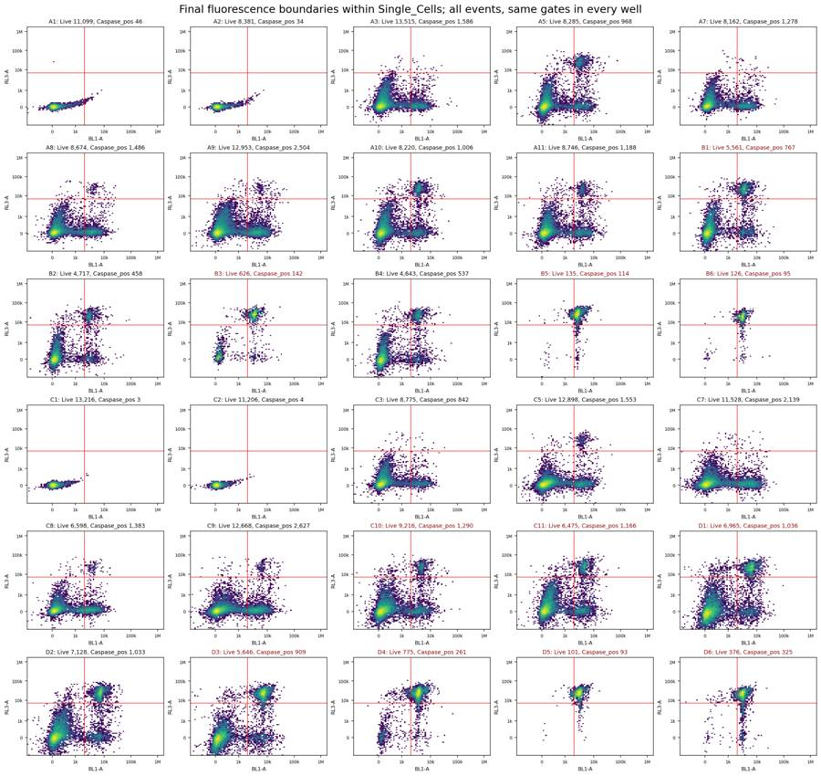
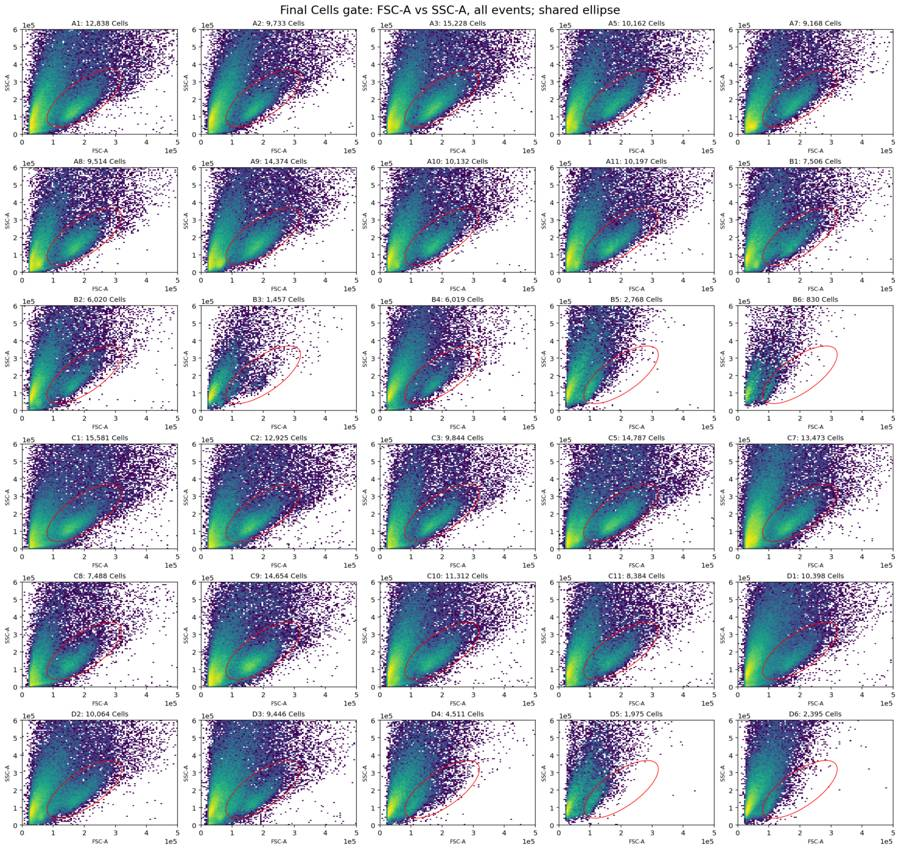
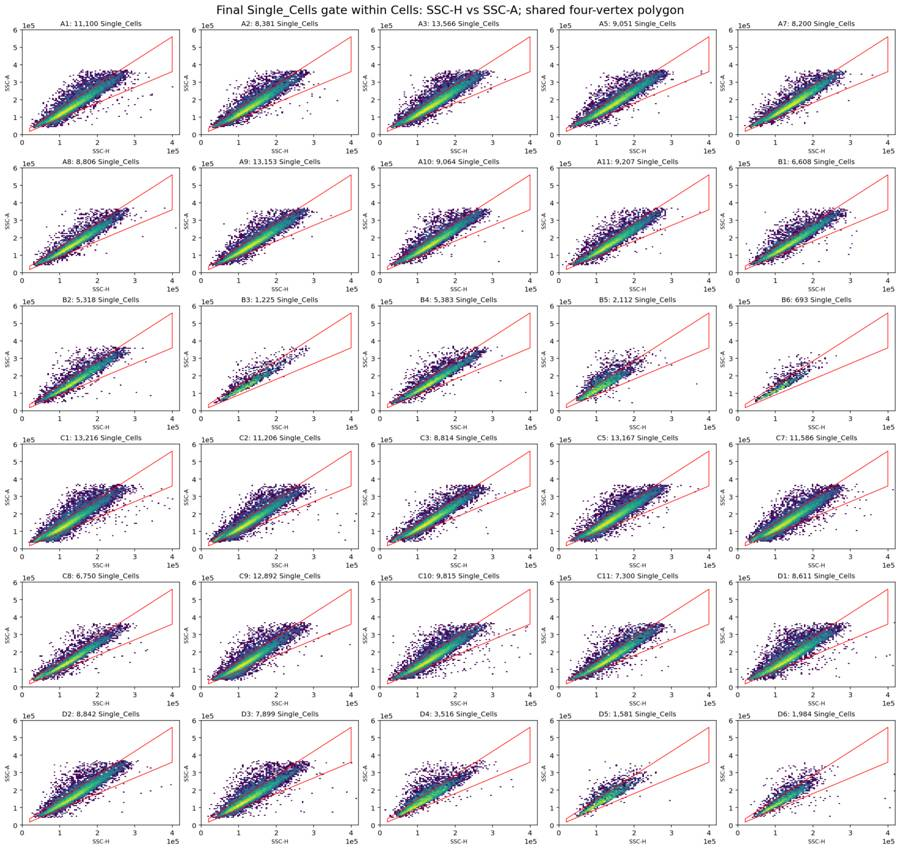
27
agent
Completed all 30 wells with one shared gate hierarchy. All 120 count rows match the reloaded GatingML.
- [gates.xml](/task/outputs/gates.xml)
- [counts.csv](/task/outputs/counts.csv)
- [flags.csv](/task/outputs/flags.csv)
- [notes.md](/task/outputs/notes.md)
QC retained 19 wells and excluded 11: five for interrupted flow and six below the documented 1,000-Live-event minimum. Flagged wells retain their counts and have numerical evidence and confidence labels.